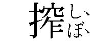

Capítulo 1
Ao engolir o sangue que escorria, um gosto adocicado de ferro se espalhou pela minha boca. O dano não era exatamente grave. Ainda assim, sem dúvida eu precisava de tratamento. Já tinha passado muito do ponto em que uma cura natural daria conta.
O homúnculo que um dia tivera uma existência limitada a flutuar num tanque de suprimento de energia mágica agora se tornara uma entidade estranha, que não era bem humana, nem Espírito Heroico, nem um simples homúnculo: alguém com o nome próprio de Sieg.
De repente, olhei para o dorso da minha mão esquerda. Normalmente, um Selo de Comando desaparece depois de consumido, deixando apenas um leve hematoma. No caso de Sieg, porém, o contorno só havia ficado indistinto; o selo continuava ali. Pior: a mão tinha escurecido um pouco ao redor do Selo de Comando gasto. Como não doía, Sieg concluiu por ora que devia ser um efeito colateral do consumo do selo.
Achei que meu corpo estava estranhamente pesado, mas então percebi que Rider estava com os braços em volta do meu pescoço, me encarando com uma expressão severa.
"...Você não tem alguma coisa para me dizer?"
Eu sabia o que devia dizer sem nem pensar.
"Acho que te devo um pedido de desculpas."
"Isso mesmo. Deve mesmo. E muito! Todo o meu esforço foi por água abaixo!"
Com as mãos no meu colarinho, Rider me sacudia com os olhos cheios d'água.
"Você avançou contra a Saber Vermelha e morreu! Depois voltou à vida na mesma hora! Aí virou um Servo e agora voltou ao normal! O que foi que aconteceu, afinal?! Fala, fala, fala!"
"...Pois é. A verdade é que eu também não entendo muito bem. Por que foi que eu voltei à vida?"
"Como assim você pergunta isso pra mim, seu idiota?! Ai, sério... idiota! Idiota! I-DI-O-TA!"
Depois de gritar até cansar, Rider de repente me acertou com uma cabeçada no peito. Mantendo o rosto virado para o chão, ele murmurou:
"...Ainda bem que você está vivo. Ainda bem, de verdade. Mas escuta bem: nunca mais faça isso. Nunca mais. Entendeu? Entendeu mesmo?"
Sieg respondeu com tranquilidade ao olhar marejado de Rider.
"Não posso prometer isso."
"...Hã?"
Rider piscou duas, três vezes, e logo inflou as bochechas.
"Como assim?! Numa hora dessas, o normal seria prometer! Pedir desculpas chorando por ter feito uma loucura, jurar que nunca mais faria isso, e aí eu te perdoaria e bagunçaria seu cabelo!"
"Eu voltei justamente para fazer uma loucura... Rider, eu ainda quero salvar meus companheiros. Quero retribuir a eles a misericórdia que tiveram comigo naquela vez."
"...Isso..."
"Eu sei. Sei muito bem que é um desejo impossível. Como você disse, talvez o certo fosse seguir em frente sem olhar para trás. Talvez eu pudesse até ter sido feliz assim."
Mesmo assim... eu não conseguiria viver fingindo que eles nunca existiram.
Ao ouvir o apelo de Sieg, Rider soltou um suspiro exagerado.
"Sério, sério, sério... você é mesmo... você é mesmo... ah, qual é!"
Ele bagunçou o próprio cabelo com força e deu um pequeno salto. Sieg já se preparava para levar uma bronca, mas Rider de repente abriu um sorriso radiante.
"Isso é ótimo! Sim, é exatamente esse tipo de pessoa que você é! Ninguém te culparia se tivesse ido embora, mas você mesmo não consegue aceitar isso! Graças a você, eu também me decidi! Aquilo estava errado, completamente errado! Tão errado que não tem nem discussão! Certo, então vamos salvá-los! Vamos salvar todo mundo!"
"...Tudo bem mesmo?"
"Hã? O quê?"
"Quero dizer... olhando por qualquer ângulo, não parece uma situação que outro Servo aceitaria com tanta facilidade."
"Ah, era só isso? A gente pensa nisso depois que acontecer! Agora vamos!"
Rider puxou o braço de Sieg à força e correu em direção à Fortaleza Millennia prestes a ruir, mas parou logo em seguida. O motivo era óbvio: havia um mago bloqueando o caminho dos dois.
"Ah, fomos pegos. Faz sentido, né? Você estava naquela fortaleza assistindo tudo."
Rider coçou a cabeça, constrangido. Diante deles estava uma bela mulher de aura gélida, usando óculos de armação afiada que só destacavam ainda mais seu ar agressivo. Era Celenike Icecolle Yggdmillennia, Mestre de Rider do Preto, Astolfo.
Sieg tinha certeza de que ela estaria furiosa. Rider já havia reclamado antes que sua Mestra alimentava por ele uma obsessão nada discreta.
Mas, contrariando essa expectativa, Celenike sorria. Com uma expressão quase extasiada, observava os dois de braços entrelaçados.
"Nossa. Talvez fosse melhor se ela estivesse com raiva."
Sieg assentiu, como se dissesse que pensava o mesmo.
Celenike não estava furiosa. Mais precisamente, já tinha ultrapassado esse estágio. Quando sua fúria passava de certo ponto, ela simplesmente "congelava".
Suas emoções eram decompostas, e seus pensamentos se tornavam friamente racionais. O vetor, no entanto, continuava o mesmo. A humilhação ela retribuía com mil vezes mais ódio; o insulto, com dez mil vezes mais crueldade.
No caminho até isso, toda hesitação desaparecia. Até interesses pessoais deixavam de importar. No instante em que Rider ignorou sua ordem de retirada e tentou proteger o homúnculo, Celenike já havia deixado de se importar até mesmo com o resultado da Guerra do Santo Graal.
Restava apenas preparar, com lógica implacável, o desfecho que faria Rider sofrer o máximo possível. Mesmo que o obrigasse a se matar com um Selo de Comando, esse cavaleiro otimista jamais cairia em desespero. E torturá-lo até a morte tampouco bastaria. Havia um único método, um só, capaz de levar o Espírito Heroico Astolfo ao desespero.
"Ei, Rider. Diga seu Nome Verdadeiro."
Celenike falou num sussurro doce. Embora a pergunta fosse repentina e sem sentido, Rider inclinou a cabeça e respondeu.
"Astolfo. Um dos Doze Paladinos de Carlos Magno. E daí?"
"Entenda: você não passa de um Servo separado do corpo principal de um Espírito Heroico. Em outras palavras, é só uma cópia degradada. Não importa quantas memórias tenha de quando estava vivo ou quanto do poder de antes consiga exercer, a existência chamada Astolfo já desapareceu há muito tempo."
"...É?"
Rider admitiu que havia alguma lógica naquilo. Era um insulto, sem dúvida, mas por natureza ele nunca ligou muito para ofensas vindas dos outros.
"E o que você quer dizer com isso? Que eu sou uma cópia?"
"Quero dizer que eu até poderia respeitar o Espírito Heroico Astolfo. Mas você, Rider, não passa de um brinquedo especial que eu convoquei."
"..."
Diante daquele sorriso cruel, Rider ergueu a lança num instante. Aquilo talvez fosse um gesto impensável contra a própria Mestra, mas alguma coisa em sua cabeça o alertava de que havia perigo.
"Sieg, fuja daqui."
"O quê...?"
"Anda, rápido!"
Mesmo pego de surpresa pelo grito de Rider, Sieg recuou para se afastar. Mas Celenike imediatamente ergueu o braço esquerdo marcado com um Selo de Comando.
"A Quarta do Preto ordena com um Selo de Comando. Mate esse homúnculo."
Sieg empalideceu. Nunca teria imaginado que ela usaria um Selo de Comando para uma idiotice dessas.
Rider percebeu a mesma coisa. Pensando agora, Celenike jamais havia falado sobre qual era seu desejo para o Santo Graal. Ela tentava vencer, sim, mas sua obsessão pela guerra era estranhamente fraca quando comparada à dos outros Mestres. No caso de Cowles, Sieg até entenderia. Mas por que Celenike, uma maga tão tipicamente maga, não se importava assim com o Graal?
A resposta era óbvia: porque ela já havia desistido da vitória. E por que desistira? Pela mesma razão.
Para humilhar Rider.
"F-fuja...!"
A lança dourada estava apontada para Sieg. Tremendo, rangendo os dentes, Rider a continha em agonia.
Selo de Comando: o trunfo do Mestre. A autoridade de impor ordens que dilacera orgulho, honra e convicções de um Espírito Heroico.
Por mais que tentasse rejeitá-lo, um Servo não podia desafiar um Selo de Comando. A não ser, talvez, que possuísse uma resistência mágica extraordinariamente alta.
"Ora. Você está se esforçando."
"...Mestra. Por favor, cancele."
"Não. De jeito nenhum! Ah, é isso! Era exatamente isso que eu queria ver! Ei, Rider. Você está desesperado, não está? E sabe muito bem por quê, certo? Neste momento você só está conseguindo resistir graças à resistência mágica do seu Fantasma Nobre, mas..."
Mais uma vez, Celenike ergueu o braço esquerdo. Desta vez, a expressão de Rider mergulhou no desespero.
Sieg também ficou atônito. Ela ia mesmo gastar dois Selos de Comando só para matá-lo? Parecia impossível... não, não era. Afinal, matar Sieg não era apenas matar um homúnculo. Era quebrar o coração de Rider e lançá-lo ao desespero. E, para isso, aquela Mestra faria qualquer coisa sem hesitar.
"Agora vou gastar o segundo Selo de Comando."
"P-por favor, não...! Eu faço qualquer coisa. Só isso não...!"
A voz rouca, a súplica arrancada a duras penas, só atiçavam ainda mais o sadismo de Celenike. Ver Rider tremendo como um pequeno animal, chorando, era para ela algo apenas belo, delicado e fascinante.
"Ah, essa expressão! Essa expressão! Maravilhosa, perfeita! Eu queria ver justamente essa cara! Não... era só essa cara que eu queria!"
Era malícia absoluta. Celenike nem pensava no que aconteceria depois. A Guerra do Santo Graal, a própria morte... nada disso importava. Ela só queria se banquetear com o desespero do próprio Servo.
Sieg não conseguia se mover. Se tentasse fugir, Celenike ativaria o segundo Selo de Comando na mesma hora. Enquanto o Fantasma Nobre continuasse funcionando, Rider ainda podia resistir de alguma forma. Como Celenike queria saborear a expressão de desespero dele, por enquanto apenas o ameaçava com o segundo comando.
Mas isso só adiava a destruição. Dez segundos, talvez vinte. Mais cedo ou mais tarde, Celenike ativaria a ordem.
Quando isso acontecesse, Sieg morreria pelas mãos de Rider. "Dead Count Shapeshifter" ainda não estava pronto para um segundo uso. E, mesmo que estivesse, seu efeito duraria só três minutos.
Sieg enfim percebeu o impasse. Seguir adiante lhe daria, no máximo, três minutos. Só isso. Então... e se matasse Celenike?
Nesse caso, a ordem do Selo de Comando deveria ser cancelada automaticamente. Claro, isso também apagaria a linha causal que mantinha Rider neste mundo... mas havia uma contramedida.
Tudo dependia do timing. Cada gesto precisava ser fluido e natural.
Ao ver que Celenike não prestava atenção nele, Sieg levou a mão com cuidado à espada fina pendurada na cintura. Já não havia espaço para hesitação.
Mexa-se, mexa-se, mexa-se... agora!
No instante em que deu o passo, Celenike se virou para ele. O rosto dela exibia uma crueldade cheia de certeza da vitória.
Sieg foi tomado por uma sensação de fracasso. Tontura e náusea o atacaram ao mesmo tempo; sem conseguir ficar de pé, ele caiu de joelhos.
"Ora. Não pegou tão bem quanto eu esperava."
Ao olhar para o chão, Sieg percebeu vagamente uma mancha negra. Era uma armadilha de magia negra.
"Você realmente achou que podia me enganar, seu homúnculo insolente? Magos negros são sensíveis à hostilidade e à malícia. No instante em que você tocou a espada, eu soube exatamente o que pretendia fazer."
Agarrando a nuca de Sieg enquanto ele se encolhia de dor, Celenike bateu o rosto dele contra o chão.
"Pare...!"
"Rider, cale a boca. Vou deixar você dar o golpe final, certo?"
Ela bateu o rosto dele no chão mais uma vez. Em seguida, pegou um velho prego que parecia ser uma ferramenta mágica e o cravou na mão direita de Sieg. A dor anormal arrancou dele um grito rouco.
"Dói, não é? Mas sabe, doeu ainda mais em mim. Meu Servo sofreu por causa de um

desgraçado como você!"Mas não era só a dor do prego atravessando sua mão. Era como se nervos expostos estivessem sendo serrados. Mesmo com o corpo fortalecido, a agonia era quase insuportável.
"A magia negra é algo sombrio, pérfido, desagradável e cruel. Só de técnicas feitas para infligir dor ao alvo, eu conheço mais de cem. O ideal seria testar cada uma em você com calma, mas infelizmente não temos tempo. Então aceite isso como um aperitivo..."
Sieg trazia na cintura, do lado esquerdo, a espada fina que Rider lhe emprestara. Em circunstâncias normais, ele a sacaria com a mão direita. Mas agora sua mão direita estava atravessada pelo prego. Teria de sacar com a esquerda, de uma posição forçada, ajoelhado no chão. Mesmo assim, Sieg não era tolo a ponto de desperdiçar aquela chance única.
Sua mão esquerda encontrou a espada. Antes que a outra percebesse, ele a sacou sem hesitação. Seu alvo, é claro, era o pescoço dela.
Para Celenike, aquele golpe deve ter sido totalmente inesperado. Por reflexo, ela se arqueou para trás para se esquivar. Ainda assim, o golpe ainda podia acertar. Só havia um problema: sacando a espada com a mão esquerda do lado esquerdo da cintura, ele era forçado a puxá-la em empunhadura invertida. A trajetória seria mais rasa do que se a tivesse sacado normalmente.
"Guh...!!"
O golpe certeiro se limitou a arrancar uma fina camada de pele. Celenike saltou para trás em pânico e berrou, tentando sufocar o medo.
"Seu homúnculo imundo... o que... o que você acha que fez comigo?!"
"Sieg, fuja... rápido!"
Mas o prego não se soltava. Sieg agarrou o próprio pulso e tentou arrancá-lo, pouco importando se abriria ainda mais o buraco na mão, porém a dor fez seu corpo inteiro se contorcer, e ele simplesmente não conseguiu escapar.
"A Quarta do Preto ordena com um Selo de Comando!"
O rosto de Celenike estava distorcido de prazer. A luz cruel em seus olhos a fazia parecer uma fera. Era a face verdadeira da maga negra, aquela que normalmente escondia e só exibia quando torturava e matava alguém por puro hobby.
"Pareeeeeee!"
Rider gritou chorando. Claro, Celenike não tinha a menor intenção de parar. No instante em que puxou o ar para dar a ordem de matar o homúnculo...
"Cala a boca."
Com essa frase brusca, a cabeça de Celenike desapareceu. Sua consciência foi interrompida num instante; ela provavelmente nem chegou a entender o que lhe acontecera. Nesse sentido, talvez até se pudesse dizer que morreu feliz, ainda saboreando o próprio prazer.
Quem a decapitou era uma garota esguia. O cabelo louro, um pouco curto, estava preso numa trança leve atrás da cabeça; ela usava um top esportivo, jaqueta de couro vermelha e jeans cortados que deixavam as pernas à mostra. Na mão, uma espada grande demais para combinar com seu corpo. Rider percebeu na hora quem era.
"Saber Vermelha... Mordred!"
Em resposta, a Saber Vermelha soltou um "Acertou" e abriu um sorriso destemido. Rider do Preto continuou com a lança em guarda, sem relaxar um instante. Seu olhar transbordava hostilidade e intenção assassina.
Mesmo sob o olhar de um herói, a Saber Vermelha não parou de sorrir.
"Calma lá, Rider do Preto. A ordem do Selo de Comando ainda está ativa. Se você não ficar quieto até a magia se dissipar por completo, esse seu corpo vai tentar tirar a vida desse sujeito precioso aí, sabia?"
"...!!"
Aquelas palavras eram pura verdade. Uma ordem dada por Selo de Comando continuava em vigor até ser cancelada pelo Mestre ou até a magia contida nela se esgotar. O primeiro Selo de Comando já tinha sido usado e, agora que Celenike estava morta, não havia como cancelá-lo.
Por outro lado, Selos de Comando são recursos descartáveis. Celenike já não podia usar o próximo. Portanto, enquanto Rider continuasse resistindo, a energia do comando seria consumida em vão... e, quando se esgotasse, ele seria libertado.
Mas, em troca, até lá ele mal conseguiria se mover, mesmo diante de um inimigo.
"Hmph. Infelizmente, não tenho tempo para ficar lidando com você. Nós vamos para aquele jardim suspenso. Então trate de ficar aí, encolhido como um zé-ninguém."
"Hã...?"
Rider e Sieg arregalaram os olhos diante daquelas palavras inesperadas. A Saber Vermelha então voltou o olhar para Sieg. Era natural que ele, que acabara de ser morto por ela, se mantivesse alerta. Com a morte de Celenike, o prego amaldiçoado havia sumido.
Mas não havia sinal de vontade de lutar nos olhos da garota. Na verdade, havia até um leve traço de compaixão ali.
"Tsc... que droga. Eu vou em frente. Vou tomar o Santo Graal. Se tentarem me impedir, eu corto vocês; se nos encontrarmos de novo, mato do mesmo jeito. Desistam do Graal. Aquilo não é algo que convenha a vocês."
Coçando a cabeça, a Saber Vermelha disse isso e foi embora sem demonstrar o menor interesse pelos dois. Ao que tudo indicava, decapitar a Mestra tinha sido apenas um bônus no caminho.
"Rider!"
"Wah, wah, wah! Não vem pra perto, idiota! E se eu te matar?!"
Ao ouvir a voz incomumente aflita de Rider, Sieg, que já ia se aproximar, parou de supetão. O suor escorria da testa dele, e seu rosto estava exausto. Resistir ao Selo de Comando era mesmo algo tão doloroso assim?... Não, não era só isso.
"Rider... sua energia mágica está bem?"
"Por sorte, eu tenho Ação Independente. U-um pouquinho eu ainda aguento, mas... guh..."
Pelos gemidos, era difícil acreditar que ele estivesse bem. É verdade que, com Ação Independente, um Servo pode continuar ativo por algumas horas ou até um dia mesmo sem receber energia mágica do Mestre. Só que Rider estava fazendo algo que talvez nem em condições normais fosse capaz de sustentar: resistir continuamente a um Selo de Comando.
Isso significava que ele continuava usando o livro que era seu Fantasma Nobre. Nesse ritmo, não duraria nem alguns minutos.
"Rider!"
"N-não! Eu não vou! Nunca, nunca vou te matar. Não depois de chegar até aqui... não vou perder assim! Se for preciso, prefiro desaparecer!"
Mesmo suando e tremendo, Rider sorriu de leve e superou com facilidade o medo da própria morte. Mas Sieg não tinha a menor intenção de deixá-lo morrer.
"Rider! Faça um contrato comigo!"
"Hã?! ...Whoa, pera, pera, pera! Desvia!"
A proposta absurda de Sieg o fez baixar a guarda por um instante, e a lança de Rider quase perfurou seu coração. Só graças ao salto apressado de Sieg e ao esforço desesperado de Rider no último segundo o golpe acabou apenas raspando.
"N-não me assuste assim! E, espera, contrato?! Um Servo fazer contrato com outro Servo é contra as regras! Não, antes disso, isso nem devia ser possível!"
"...Eu sou um Servo, mas ao mesmo tempo não sou."
"Hã?"
Diante do Rider confuso, Sieg ergueu o braço marcado com o Selo de Comando.
"Não entendeu, Rider? Enquanto eu tiver um Selo de Comando, também tenho as qualificações de um Mestre."
"N-não, mas... ainda assim... eu não posso te arrastar pra uma luta dessas..."
"Rider. Eu posso ser uma criança que ainda não completou um ano de vida. Posso ser um moleque que tem conhecimento, mas não sabe como usá-lo. Mesmo assim, eu sei o que preciso fazer aqui e agora. Eu vou fazer um contrato com você."
Ele sabia que Rider tentava matá-lo. Mas também sabia que, se fugisse agora, não haveria volta. Já não existia nem um minuto, nem um segundo de folga.
"...Você quer mesmo que eu faça um contrato nesse estado? Nessa situação em que, se eu relaxar por um instante, posso acabar te matando?"
"Se eu morrer, você morre também. É como morrer junto; não há nada a expiar. Prefiro morrer a deixar você morrer por minha causa."
"T-tá bom! Já entendi! Se é assim, que seja! Eu faço o contrato com você!"
Sieg assentiu e estendeu a mão direita. Rangendo os dentes, Rider segurou-a. A ordem de matar imposta pelo Selo de Comando o atacava sem parar. Resistir a ela consumia quantidades absurdas de energia mágica.
Não havia um segundo a perder. Sieg proclamou o contrato em voz alta.
"—Eu declaro.
Teu corpo estará sob minhas ordens; meu destino, sob tua espada.
Se te dispões a seguir o chamado do Santo Graal, esta vontade e esta razão, então responde.
Segue-me e responde às minhas palavras. Entregarás teu destino a mim, ou não?"
"Em nome de Rider, aceito esse juramento!
Você é meu Mestre, e eu sou o seu Servo!"
No mesmo instante, um clarão correu pelas mãos entrelaçadas dos dois. O caminho da ligação foi forçado a se abrir, e a linha causal se conectou.
Rider do Preto ganhara um novo Mestre e, por algum tempo, podia continuar neste mundo. Assim, o contrato estava selado: Sieg, que era ao mesmo tempo Servo e Mestre, e Rider, o Servo que jurou acompanhá-lo.
"...O c-contrato se completou, certo?"
"Sim."
"S-sendo assim... se afasta!"
Ao ouvir isso, Sieg pulou para trás às pressas. Na mesma hora, a lança passou varrendo bem diante dele.
Ao que parecia, mesmo depois de Sieg se tornar o novo Mestre, a ordem da antiga Mestra, Celenike, ainda permanecia válida. Respirando com dificuldade, Rider mostrou um breve rosto de alívio.
"A-ah, essa foi por pouco... já basta eu quase matar meu novo Mestre logo depois do contrato. Até pra um Servo inútil isso seria demais..."
"Não deixe isso registrado."
"Também não quero! De qualquer forma, agora que o contrato foi feito, eu agradeceria se você saísse da minha frente o quanto antes. Quer dizer: até a ordem deste Selo de Comando sumir, tá? Quando sumir, eu te alcanço na mesma hora!"
"Tudo bem. Então eu vou para a fortaleza. Os magos não devem ter condições de se preocupar com os homúnculos agora. Vou confirmar mais uma vez qual é a vontade deles."
"Entendido. Mas toma cuidado com Caster. Sem dúvida, foi ele quem mais se apegou a você. Parece que agora ele foi pra aquela fortaleza aérea, mas..."
"Eu sei." Sieg assentiu. Não havia dúvidas de que Caster era perigoso e, para Yggdmillennia, sua posição agora era ambígua demais para ser tratada claramente como a de inimigo ou aliado. O próprio Sieg, para falar a verdade, também estava perdido.
Deveria se opor à família Yggdmillennia? Ou procurar alguma reconciliação? Nem isso ele conseguia decidir.
E havia ainda outra preocupação: o futuro dos homúnculos. Mesmo que fossem retirados da Guerra do Santo Graal, o que fariam depois? Nascidos para serem drenados e mortos, o que deveriam escolher dali em diante, e como deveriam viver?
Isso era algo em que Sieg não podia interferir, e achava que nem deveria. Se lhes indicasse um caminho, no fim das contas só os faria voltar a viver seguindo outra vontade.
Eles precisavam escolher por conta própria. Mesmo que suas vidas fossem fugazes como efêmeras... não, justamente por isso, Sieg não achava aceitável parar de pensar.
Ao olhar para o céu, viu a enorme fortaleza que ocultava até a lua. Sieg não tinha interesse algum no Santo Graal em si. Afinal, os desejos que deviam ser realizados tinham de ser conquistados com a própria força.
Ainda assim, naquele lugar os Servos provavelmente travavam uma batalha mortal. Quem teria o desejo realizado? Jeanne d'Arc... como Ruler julgaria a luta deles?
Será que Ruler ficaria triste, ou zangada, por ele ter entrado nesta Guerra do Santo Graal?
Ou talvez... aceitasse isso também como mais um destino já conhecido. De qualquer forma, não passava de um pressentimento.
"Acho que vou levar uma bronca."
Murmurando isso, Sieg soltou um suspiro silencioso.
§§§
O grande Fantasma Nobre sem precedentes “Jardins Suspensos da Babilônia” foi criado pelo Assassin “Vermelho” Semiramis. A fortaleza flutuante que roubou e guardou o Graal Maior estava agora envolta em um silêncio congelante.
O inédito Grande Fantasma Nobre "Jardins Suspensos da Babilônia", criado por Semiramis, a Assassin Vermelha. A fortaleza flutuante que roubara e agora abrigava o Graal Maior estava envolta num silêncio glacial.
Diante dela, um garoto e uma garota se encaravam. O garoto, de pele morena e cabelos prateados, mantinha um sorriso calmo, mas seu olhar trazia algo de inquietante, quase sinistro. A garota, de pele branca como neve e cabelos dourados, devolvia o olhar com os lábios cerrados e os olhos ardendo de tensão.
Só havia uma certeza: aqueles dois se reconheciam como inimigos irreconciliáveis. Ambos eram Servos, e ambos pertenciam à classe Ruler.
A simples existência de dois Rulers já tornava aquela Guerra do Santo Graal algo anormal. Pior ainda: um deles estava participando como Mestre do lado Vermelho.
"O que está pensando, Amakusa Shirou? Você queria tanto assim o Santo Graal?"
"Sem dúvida. Se você crê no mesmo Deus que eu, deveria ser capaz de entender, não?"
"Não brinque comigo. Você sabe muito bem que o Graal Maior de Fuyuki não é o Santo Graal dos fiéis."
Como se não fosse tolerar nenhuma mentira, Ruler avançou sobre Shirou. Foi então que Semiramis, a Assassin Vermelha, surgiu em meio a uma risada debochada.
"Hah. Nesse caso, não vejo motivo para você defender esse Graal com tanto apego."
"Assassin Vermelha... isto é obra sua?"
A pergunta direta pareceu divertir Semiramis.
"Talvez eu tenha seduzido meu pobre e inocente Mestre, conduzindo-o pela senda do mal. Mas, infelizmente, eu sou uma Serva. E Servos obedecem a seus Mestres, não é mesmo?"
"Assassin. O que fez com o nosso Mestre?"
A Archer Vermelha, vestida de verde, aproximou-se com os olhos de uma fera prestes a arrancar uma garganta.
"Nosso ex-Mestre, quer dizer."
Assassin respondeu com toda a calma do mundo. A Archer Vermelha já ia avançar, mas Rider Vermelho a conteve num instante. Ainda assim, até ele parecia pronto para matar.
"Fique tranquila, ele está vivo. Eu disse, não foi? Eles me transferiram pacificamente os direitos de Mestre. No momento, ele acredita estar sonhando que venceu a Guerra do Santo Graal. Coitado dele, então, por favor, não o acordem."
As palavras de Shirou fizeram Archer Vermelha e Rider Vermelho se moverem quase ao mesmo tempo. Uma flecha voou, e uma lança disparou direto para sua garganta.
Karna e Semiramis interceptaram os dois ataques ao mesmo tempo. Karna apanhou a flecha no ar; Semiramis bloqueou a lança com o braço esquerdo, recoberto de uma armadura negra como escamas de peixe.
A lança de Rider Vermelho despedaçou a proteção, mas ainda assim foi contida.
"Como esperado de Rider Vermelho. Perfurar escamas divinas como se fosse a coisa mais natural do mundo... realmente faz jus ao filho de um deus."
Semiramis franziu o rosto, sentindo o sangue escorrer pelo braço.
"Se eu tivesse atacado para valer, não pararia na armadura. Teria atravessado seu braço e o seu rosto também."
"Imagino que sim. Mas isso teria sido suicídio. No momento, o Mestre de vocês sou eu."
Rider Vermelho deu de ombros ao ouvir isso.
"Não me lembro de ter concordado com essa troca. Ainda que eu nunca tenha encontrado o antigo Mestre pessoalmente, não pretendo trair meu senhor desse jeito."
"Então será uma divergência de interpretação. Eu não considero que você o tenha traído."
Rider Vermelho estalou a língua e recuou. Archer Vermelha, porém, voltou-se para Karna, que ainda segurava sua flecha.
"Lancer, por que interferiu? Não vai me dizer que reconhece esse homem como Mestre!"
"Em termos estritos, ele de fato é um Mestre. Isso não significa que eu aprove a mudança. Mas você também agiu cedo demais. Antes de atirar, não havia verdades que valia a pena questionar?"
Archer Vermelha recuou a contragosto.
"Obrigado, Lancer."
"Não me agradeça. Eu não fiz isso por você. E, francamente, com a sua força, deveria ser capaz de lidar sozinho com ataques desse nível. Não se apoie em mim."
"...Justo."
Shirou sorriu de leve e voltou a encarar Ruler.
"Este é o nosso pedido. Esta Guerra do Santo Graal já está praticamente decidida. Do lado Preto restam apenas três Servos, se desconsiderarmos Assassin."
"Quatro. Saber, Archer, Rider e Caster."
A correção de Ruler escureceu por um instante a expressão de Shirou.
"Contar Saber é generosidade demais. Pela minha estimativa, ele só consegue lutar por mais alguns minutos."
"Mesmo assim, Saber existe."
Shirou não rebateu. Ruler parecia sofrer ao dizer aquilo. Saber Negro — Siegfried — era uma existência instável, uma pseudo-materialização rara demais, em que um Servo se sobrepunha a um homúnculo por apenas cento e oitenta segundos. Para Shirou, Sieg era irrelevante. Para Ruler, não.
"Tudo bem. Assassin Negra continua desaparecida, mas levando em conta o caso dos assassinatos em série, não parece haver ali uma dupla legítima de Mestre e Servo. Difícil contar com eles. Então, diga-me: o que faria nessa situação, Archer Negro?"
"Nada muito especial. Pela situação, podemos considerar que Ruler está do nosso lado. Além disso, nem todos os Servos Vermelhos parecem unidos. Se for assim, não diria que estamos em tanta desvantagem quanto parece."
Não era bravata. Archer Negro tinha seus motivos para acreditar nisso. Ao menos por enquanto, a desconfiança dos Servos Vermelhos em relação a Shirou parecia muito maior do que a vontade de atacar imediatamente o lado Preto.
"Entendo. Então, Caster Negro, e você?"
"...Do meu ponto de vista, a verdadeira dúvida é outra. Por que vocês não atacam todos de uma vez e exterminam o lado Preto? Os Selos de Comando de Ruler não funcionam em você. Ruler e Archer talvez consigam resistir, mas eu cairia sem dificuldade diante de vocês. Sendo assim, imaginei que houvesse algo que desejassem me oferecer."
As palavras fizeram Ruler e Archer Negro se enrijecerem.
"Caster...?!"
Mas Caster Negro, mascarado e envolto em seu manto azul, não se moveu. Limitou-se a olhar diretamente para Shirou.
"Sim, Avicebron. E o que eu tenho a oferecer é rendição."
Shirou pronunciou o Nome Verdadeiro de Caster Negro sem a menor hesitação. Já não havia motivo para surpresa. Mesmo sem o privilégio de usar Selos de Comando sobre os Servos participantes da guerra, ele ainda possuía a capacidade de discernir seus Nomes Verdadeiros.
"Mas, nesse caso, o Santo Graal não deixará de funcionar? O número de Servos a serem destruídos ainda será suficiente?"
"Não se preocupe. Ninguém conhece este Graal Maior melhor do que eu. Seus desejos e os meus não entram em conflito. Ambos poderão ser alcançados. Isso, claro, se o seu desejo for realmente aquilo que eu imagino."
"Tenho uma condição."
"Diga. Tentarei atendê-la na medida do possível."
"Não me oponho a aceitá-lo como Mestre. Mas deixe Roche Frain Yggdmillennia, meu antigo Mestre, inteiramente por minha conta."
"Em outras palavras?"
"Não o machuque."
Shirou assentiu. Semiramis soltou uma risada satisfeita.
"Ora, ora. Que Servo admirável. Garantir a segurança do próprio Mestre em troca do próprio corpo..."
"Caster, você não vai..."
A voz de Archer Negro estava fria como gelo. Ignorando o chamado, Caster avançou até Shirou.
"Então, por favor, estenda a mão."
"Perdoe a grosseria de fazê-lo por cima das luvas."
Sem a menor hesitação, Caster Negro ofereceu o braço direito. Shirou segurou sua mão e começou a entoar o encantamento do novo contrato.
"Pare, Caster...!"
Archer Negro disparou uma flecha para impedi-lo, mas Karna a rebateu com a ponta de sua lança divina. O projétil atingiu o teto e explodiu com um estrondo ensurdecedor.
"Numa Guerra do Santo Graal, Mestres controlam Espíritos Heroicos por meio de energia mágica e Selos de Comando. Mas nós, Servos, também temos o direito de escolher a quem servimos. Não sei que tipo de Mestre ele tinha antes, mas a escolha dele merece respeito."
Semiramis franziu o cenho.
"Não danifique meu jardim, Archer Negro. Seu poder não será suficiente para destruí-lo, e tudo o que conseguirá é desperdício."
Archer Negro soltou um suspiro. Pensando bem, os sinais sempre estiveram ali. Caster Negro cumprira seu papel na produção de golens, mas não demonstrara interesse algum em mais nada — nem no curso da guerra, nem no Santo Graal em si.
Talvez, portanto, aquela deserção fosse algo que já deveria ter sido previsto.
"Reconheço você como meu Mestre, Amakusa Shirou Tokisada."
Assim, o contrato com Roche foi desfeito, e Caster Negro tornou-se Servo de Shirou Kotomine — Amakusa Shirou Tokisada.
"Muito bem. Sua primeira ordem: cerquem-nos."
"Como desejar, meu senhor."
Com serenidade absoluta, Caster Negro moveu discretamente os dedos da mão direita.
No mesmo instante, vários golens arrombaram a porta da capela e invadiram o recinto. Eram modelos escolhidos a dedo, feitos de bronze, ferro e barro, mas dotados de um dinamismo que os fazia parecer seres vivos.
Num piscar de olhos, eles cercaram Ruler e Archer Negro por cima, pelos lados e por trás. Com todos os Servos Vermelhos à frente, os dois ficaram presos como pássaros numa gaiola.
"Para ser honesto, considero isto abominavelmente covarde, mas você é um estorvo, Ruler. Morra junto com Archer Negro."
Ao sinal frio de Shirou, Caster Negro estalou os dedos, e os golens avançaram em massa.
Archer Negro armou outra flecha, enquanto Ruler recebia os golens com a bandeira sagrada. Nenhum dos dois perderia para meras criaturas de barro, mas aqueles, controlados diretamente por Avicebron, moviam-se com agilidade e precisão comparáveis às de um Servo de primeira categoria.
"Archer, Lancer, Rider. Se quiserem, ainda podem se juntar ao ataque. Ou o orgulho de vocês não permite? E quanto a você, Lancer?"
"Não ligo para acusações de covardia. Se precisasse abatê-los aqui, eu simplesmente o faria. Mas, padre, o seu desejo não se realizará."
Embora mantivesse a lança pronta, Karna não observava Ruler nem Archer Negro, mas sim a porta destruída da capela.
Ruler golpeou a garganta de um golem e mudou de posição num instante.
"Archer!"
Sem necessidade de mais explicações, Archer Negro recuou com um salto. Ao mesmo tempo, Semiramis ergueu a mão direita.
O encantamento foi curtíssimo, mas ali, dentro dos Jardins Suspensos da Babilônia, até uma fórmula mínima já se convertia em grande magia. Lâminas de luz convergiram diretamente sobre Archer Negro.
Foi então que um relâmpago vermelho atravessou a capela.
Os Servos Vermelhos, à exceção de Karna, não conseguiram esconder a surpresa. A figura que irrompera ali como um vendaval espalhou faíscas rubras e, com um só golpe de sua espada enorme, partiu dois golens ao meio.
"...Então você veio."
Karna avançou de imediato, desferindo um golpe de lança, mas a intrusa aparou o ataque com técnica impecável, escalou um golem que investira contra ela e enterrou a espada em sua cabeça.
"Archer Negro... então aquela flecha tinha sido para isso...!"
Semiramis lançou um olhar feroz para o teto perfurado. A flecha anterior não fora uma tentativa real de impedir o novo contrato. Seu propósito era assinalar aquela posição com estrondo e energia mágica, para que "ela" pudesse encontrá-los sem hesitar.
"Entendo."
Shirou recebeu a recém-chegada com um sorriso fino. O elmo que a cobria quando se conheceram já não estava ali. Restavam o cabelo dourado, os olhos ferozes e o sorriso arrogante.
"Então a Saber Vermelha era você. A cavaleira da rebelião que levou a lenda do Rei Arthur ao fim... Mordred."
"Hah! Não sai falando meu nome com essa intimidade toda!"
Rindo alto, Mordred girou a espada e devastou os golens à frente. Semiramis estalou a língua.
"Saber! Então pretende mesmo nos trair?!"
"Tá brincando, seu idiota?! Quem traiu primeiro foram vocês! Tentaram matar o meu Mestre com truque sujo! A partir daí, viraram meus inimigos, sem discussão!"
Junto daquela declaração, um golpe em arco rasgou a capela como se traçasse uma linha divisória entre Shirou e Ruler. O chão explodiu em lascas de madeira e pedra.
Logo depois, algo foi atirado de longe para dentro da capela. Os golens sobreviventes o interceptaram por reflexo, mas a coisa era uma armadilha: uma fumaça branca jorrou de dentro dela e tomou o salão inteiro.
"Que irritação...!"
Semiramis se enfureceu.
"Archer, Saber, retirada! Agora!"
Os dois assentiram sem dizer nada, e Archer Negro e Saber Vermelha dispararam para fora da capela destruída como coelhos fugindo da toca.
"Shirou, eu vou atrás deles."
"Não. Deixe isso comigo."
Caster Negro avançou um passo. Antes que qualquer um pudesse questioná-lo, subiu sobre um golem de transporte e desapareceu da capela num instante.
"Então vamos deixar o resto nas mãos dele."
"Tem certeza? Afinal, ele é um Caster..."
"Com Ruler, Saber e até Archer do outro lado, ser abatido seria o resultado mais provável. Ainda assim... acho que ele quer provar alguma coisa."
Semiramis inclinou a cabeça diante do murmúrio de Shirou.
"Provar o quê? Que se juntou ao nosso lado para nos mostrar um pouco de força?"
"Não, Assassin. Ele só quer provar que o golem que criou é a existência suprema. Não há ego nisso. Só uma fé pura e absoluta."
Avicebron não era um artesão no sentido comum. Um artesão derrama alma, orgulho e técnica naquilo que cria. Avicebron oferecia algo diferente: devoção. Por isso continuava a fabricar golens com uma obstinação quase desumana.
Caster Negro se unira ao lado Vermelho apenas por buscar o auge. E o Fantasma Nobre que estava prestes a produzir era justamente o ápice desse desejo: "Golem Keter Malkuth".
Enquanto acelerava o golem que usava como montaria, Avicebron começou a buscar seu antigo Mestre por telepatia.
"Roche. Está me ouvindo, Roche?"
``Se――Sensei!'' Bom, bom! Não acredito que você está vivo! 〟
"P-professor?! Ainda bem, ainda bem! O senhor está vivo!"
Mesmo através da telepatia, a agitação de Roche era evidente. Não era para menos. Aos olhos dele, o contrato com o próprio Servo havia sido rompido de forma súbita e sem explicação.
"O que aconteceu?"
"Não posso explicar em detalhes, mas quero que fique tranquilo. Você continua sendo alguém importante para mim. E, por isso mesmo, preciso lhe confiar uma tarefa crucial."
"S-sim, professor! O que devo fazer?"
Enquanto deslizava pelos Jardins Suspensos montado num golem, Caster Negro entrou em contato com o antigo Mestre.
"Preciso que você traga o 'núcleo' que está na minha oficina. Parece que finalmente chegou a hora de ativar meu Fantasma Nobre."
"...Entendido!"
Com a voz ainda trêmula, Roche encerrou a comunicação. Assim que Archer Negro chegasse à fortaleza, talvez o garoto descobrisse que havia sido traído. Ainda assim, Avicebron tinha certeza de que ele viria.
Mesmo que acreditasse na traição, o menino que o admirava sem reservas correria ao seu encontro. Pensar nisso arrancou de Caster um sorriso amargo. Ele, que odiava pessoas e ainda mais crianças, acabava dependendo da confiança cega de alguém no fim de tudo.
A vida era uma sucessão de ironias e traições, e os sonhos estavam sempre cercados de obstáculos. Mesmo assim, Avicebron não parava de avançar.
Como Servo, ele agora se encontrava num ponto mais próximo do sonho do que jamais estivera em vida. Um lugar que todos os Cabalistas desejaram alcançar ao longo dos séculos.
Para Caster Negro, inimigos, aliados e até ele mesmo já haviam deixado de ter importância real.
§§§
Quando Ruler e Archer Negro retomaram a corrida em direção à fortaleza, a Saber Vermelha já havia desaparecido de vista.
"Archer Negro. Vlad III, o Lancer do Preto, e seu Mestre, Darnic, já foram derrotados. Neste ponto, a estrutura de oposição entre Preto e Vermelho praticamente desmoronou. Não pretendo tomar partido do lado Preto em si, mas gostaria de oferecer minha cooperação."
Archer concordou em silêncio. Como Ruler dizia, a situação já não podia mais ser resumida à disputa de qual facção tomaria o Santo Graal.
"Não há problema. Com a morte de Darnic daquela forma, minha Mestra naturalmente se tornará a próxima líder. Se entender a situação atual, ela aceitará. Ainda assim, mesmo com você ao nosso lado, nossa desvantagem continua evidente."
"Agora precisamos deter o lado Vermelho... não, precisamos deter Amakusa Shirou Tokisada."
Talvez tivesse sido justamente por isso que o Santo Graal a invocara à força, mesmo por meio de posse. Shirou não havia roubado o Graal Maior apenas para satisfazer um desejo egoísta. Ele pretendia fazer algo muito pior com aquele poder.
"A salvação de toda a humanidade, Jeanne d'Arc."
O olhar do garoto não vacilava. Se fosse apenas delírio, teria sido mais fácil. Se ele tivesse falado como um fanático em transe, ainda seria menos assustador. Mas não era isso. Shirou falava com a clareza de alguém que pensara naquele plano milhares de vezes.
O Graal Maior de Fuyuki existia para reunir as almas dos Espíritos Heroicos e ativar a Guerra do Santo Graal. E Shirou pretendia usá-lo de um modo que talvez nem mesmo as três famílias fundadoras, Einzbern, Tohsaka e Makiri, fossem capazes de imaginar.
"Salvar toda a humanidade..."
"Ruler. Você acredita que as palavras daquele menino eram sinceras?"
"Sim. Acredito. Também entendo que o Graal é indispensável para o método que ele pretende usar. O que não consigo prever é o resultado."
Salvar toda a humanidade parecia uma simples brincadeira de linguagem. Nenhum santo, nenhum rei, nenhuma nação realizara algo assim. Felicidade e infelicidade sempre se equilibravam em pratos opostos. Se alguém ganhava, alguém em algum lugar acabava perdendo.
Num mundo pequeno, talvez fosse possível fazer todos sorrirem ao mesmo tempo — uma família, um grupo, um país. Mas, quanto maior o mundo, maior o número inevitável dos que seriam deixados para trás.
"Ainda assim, ele afirmou com convicção que salvaria toda a humanidade. Provavelmente de um modo que nem nós conseguimos conceber."
"...A questão é se isso pode mesmo ser chamado de salvação."
Para Ruler, a resposta era óbvia. Não podia existir verdadeira salvação conduzida pela mente e pela ação de uma única pessoa. E, mais do que isso, não devia existir.
"E a Saber Vermelha?"
"Se eu e você tivéssemos morrido ali, tudo teria saído exatamente como Shirou queria. Ela provavelmente agiu por odiar isso... mas ainda não sabemos se aceitará unir forças conosco."
Ruler lembrou, em silêncio, do sorriso autoconfiante da cavaleira rebelde que pusera fim à lenda do Rei Arthur.
"Devemos presumir que os outros Servos ficaram do lado dele?"
"...Não sei. Rider Vermelho e Archer Vermelha são heróis orgulhosos. Mas o Mestre deles agora é Shirou. Enquanto houver Selos de Comando, até eles terão as mãos atadas."
Karna, Atalanta, Aquiles, Semiramis. E ainda havia Amakusa Shirou Tokisada, o outro Ruler, além do Caster Vermelho que sequer aparecera. Somando-se a isso, Caster Negro havia desertado. O lendário Cabalista e maior criador de golems do mundo agora estava do lado inimigo.
Até o Graal Maior fora roubado. Era uma desvantagem esmagadora, e a pressão só aumentava a cada segundo. Mesmo assim, não podiam se deixar levar pelo desespero. A prioridade era fazer o restante do lado Preto compreender a nova situação.
§§§
Aquilo era péssimo. Péssimo demais. Kairi Shishigou corria com agilidade surpreendente, lado a lado com a Saber Vermelha, tentando escapar dos Jardins Suspensos.
"Ah, merda. Eu sabia que isso não ia terminar bem...!"
"Ué? Mestre, do que você está reclamando?"
"Do que eu estou reclamando? De tudo! Servo sendo Mestre já é trapaça demais. E ainda por cima um Ruler sobrevivente da Terceira Guerra do Santo Graal, sessenta anos atrás? Isso é um desastre completo!"
Correndo ao lado dele, a Saber Vermelha soltou uma gargalhada.
"Hahahaha! Pelo menos agora ficou mais simples. Por enquanto, dá para considerar todo mundo inimigo, certo?"
"Não, não dá! Primeiro a gente precisa unir forças com o lado Preto. E aquela cavaleira da bandeira... pelo jeito ela é a verdadeira Ruler..."
Naturalmente, o outro lado também devia compreender que ele não era seu inimigo imediato. Afinal, foi justamente por isso que permitiram que a Saber Vermelha se jogasse naquela confusão como uma bola de demolição.
O piso tremeu. Ao que tudo indicava, os Jardins Suspensos haviam começado a subir novamente.
"Certo, Mestre. Vamos sair daqui!"
"Ei, espera só um—"
Sem lhe dar tempo de terminar a frase, Mordred içou Kairi nos ombros. E, sem permitir qualquer protesto, saltou para fora dos Jardins Suspensos com uma única explosão de energia mágica.
Não era nada parecido com um salto de paraquedas. Se havia alguma comparação cabível, era com ser lançado por uma catapulta. Ou melhor: como se agarrar ao lado de um caça em plena velocidade supersônica.
"Vo-cê... é... completa-men-te... louca...!!"
"Hahahaha! Relaxa. Confia em mim!"
"Sua credibilidade está despencando em tempo real!"
Um zumbido agudo tomou seus ouvidos. Por reflexo, Kairi engoliu uma pílula destinada a reforçar temporariamente o corpo e tentou conter o pânico. Ainda assim, aquilo mal passava de conforto psicológico. Se Mordred errasse o ajuste do pouso, o resultado seria um acidente grotesco.
Eles desaceleraram de uma velocidade próxima à supersônica para algo em torno de duzentos quilômetros por hora antes de atingir o chão. Mordred absorveu boa parte do impacto deslizando pelo terreno, mas ainda assim a pancada reverberou no estômago de Kairi como o soco de um peso-pesado.
Dando alguns passos fortes para dissipar a força restante, a Saber Vermelha acabou por aterrissar em segurança. Fisicamente, Kairi estava inteiro. Mentalmente, tinha sido espancado.
Foi a experiência mais próxima da morte que já tive, pensou ele. Na próxima vez que invadisse os Jardins Suspensos, jurou para si mesmo, levaria algum equipamento que permitisse a um ser humano voar de verdade.
§§§
Na Floresta de Ideale, cujas árvores haviam sido devastadas pelas investidas de Spartacus, o lago no extremo norte marcava o ponto de encontro combinado.
Roche Frain Yggdmillennia avançava com seu golem de transporte à máxima velocidade, o corpo inteiro trêmulo de excitação. Em suas mãos carregava uma enorme peça cilíndrica, o "núcleo". Finalmente chegara o momento de usá-lo.
O Fantasma Nobre anti-exército de Rank A, o golem supremo: "Golem Keter Malkuth". Até os golens que Caster criava sem esforço já usavam técnicas, fórmulas e materiais muito além da compreensão de Roche.
Se até esse professor dizia com convicção absoluta que aquilo seria o golem definitivo, então Roche, mesmo sendo apenas um mago de uma geração recente, estava prestes a testemunhar uma glória sem igual.
Que nome dar àquele sentimento senão alegria? O garoto corria obedecendo fielmente às ordens. A Guerra do Santo Graal já não importava mais. Se seu Servo ativasse aquele Fantasma Nobre, para ele isso bastaria como vitória.
"Professor!!"
Diante do lago de águas límpidas, Caster Negro o recebeu com a mesma serenidade de sempre e fez um leve aceno com a cabeça.
"Aqui está o 'núcleo'. Não há problema nenhum com ele... certo?"
"Perfeito."
"Que bom. Mas, professor... o senhor já tinha feito esse 'núcleo' há bastante tempo, não? Havia algum motivo para não ativá-lo até hoje?"
Avicebron ignorou a pergunta. Cravou o "núcleo" no chão sem cerimônia, agachou-se e mergulhou a mão na água do lago.
"...Professor?"
Pousando o dedo indicador sobre os lábios, ele apenas fez sinal para que Roche ficasse em silêncio. O garoto cobriu a própria boca com as duas mãos, obedecendo no mesmo instante.
Então, diante do lago imóvel, Caster Negro começou a entoar em voz alta.
"Nascido da terra, sorve o vento e se enche de água."
Era uma prece dirigida aos céus para insuflar vida ao barro.
"Ao brandir o fogo, o mal se afasta. A impiedade quebrará o próprio crânio, e a justiça conduzirá o sangue à pureza."
Aquela terra, aquelas árvores e aquele corpo, tudo seria oferenda ao Senhor. O ápice do mistério que só um homem incapaz de buscar fama ou poder podia produzir.
"Um corpo colossal como um pico entre as nuvens, firme como a rocha. Guardião de todos, governante de todos, aquele cujo semblante domina a todos."
Era um milagre que já não podia ser contido na categoria de Fantasma Nobre comum.
"Tu és barro e, ainda assim, não és barro. És homem e, ainda assim, não és homem. És aquele que permanece no paraíso, aquele que o governa, aquele que conduz ao paraíso. És nosso sonho, nossa esperança, nosso amor."
A personificação da fé de um povo condenado ao sofrimento.
A reprodução de um milagre do Senhor: um boneco encarregado de tingir o mundo inteiro.
"Aquele que abraça o Espírito Santo, Ruach — teu nome é Adão, o Homem Primordial."
§§§
Ao ver a fortaleza semidestruída, Sieg sentiu o coração pesar. Um braço fino se projetava entre os escombros — parecia o de um homúnculo. Quando o viu se mover, correu até lá.
"Ei!"
Aquela mão se ergueu outra vez, com a palma virada para cima, como se pedisse socorro. Convencido disso, Sieg tocou os escombros que a soterravam. Sua magia era voltada à destruição do alvo; por isso mesmo, ele podia desintegrar a massa ao redor sem causar impacto adicional na vítima.
Os Circuitos Mágicos aceleraram. Entendendo a composição do entulho com precisão total, Sieg o pulverizou. A magia funcionou perfeitamente. Tudo o que pesava sobre o homúnculo virou pó.
Mas já era tarde.
"Ah..."
Não adiantava se perguntar se, correndo mais rápido, teria chegado a tempo. Também era inútil imaginar que teria sido capaz de protegê-la antes que fosse esmagada. Se ela quisesse mesmo ter sido salva, a escolha precisava ter partido dela: a escolha de não lutar.
"Obrigada por me ajudar. A batalha acabou?"
Talvez os escombros que lhe acertaram a cabeça tivessem levado quase toda a sua visão. Com os olhos já turvos, ela estendia a mão para o vazio.
O entulho sumira, mas um castiçal do corredor atravessara seu abdômen. Além disso, o golpe de Spartacus havia apanhado seu corpo de raspão com força suficiente para arrancar ambas as pernas.
Talvez a dor simplesmente não funcionasse em seu corpo, ou talvez ela a estivesse bloqueando de propósito. De qualquer modo, a garota continuava a perguntar apenas se sua missão tinha terminado.
"...Sim. Acabou."
Ao ouvir isso, ela soltou um suspiro de alívio. O gesto parecia terrivelmente humano.
"Então... preciso voltar para a limpeza. Ah, mas... neste estado vou sujar o chão. Que vergonha. Preciso trocar de roupa, largar a alabarda e pegar uma vassoura... não, antes disso preciso estancar o sangue..."
Sieg reprimiu as próprias emoções e segurou a mão dela com firmeza, sem tremer.
"Não precisa. Eu cuido da limpeza depois. Você pode descansar."
"É mesmo...?"
Havia alívio na voz da garota.
"Na verdade... eu também estou um pouco cansada. Se posso deixar isso com você, melhor ainda. Desculpe, então vou repousar um pouco. Acorde-me em cinco horas."
"...Durma por mais tempo do que isso."
"Cinco horas deveriam ser suficientes para um homúnculo. Mas meu corpo parece estar exausto... esta sensação de sonolência... é a primeira vez que eu..."
Como quem adormece, ela fechou os olhos. A força em seus dedos foi se esvaindo aos poucos. Durante esse tempo, Sieg procurou desesperadamente alguma forma de fazer alguma coisa por ela — mas não havia nada que pudesse fazer.
Por fim, a força se perdeu por completo. Quando Sieg afrouxou um pouco a mão, a dela escorregou para o chão.
Ele se levantou e virou as costas. Não havia mais razão para permanecer ali. Ainda restava a ele uma missão. Cumpri-la certamente seria a melhor forma de honrar a morte dela.
"Você voltou até aqui por nossa causa. Que lealdade triste. Mas obrigada. Graças a você, eu fui salva."
Sieg se virou num sobressalto. Correu de volta, segurou a mão dela outra vez e procurou seu pulso. Mas dessa vez não havia engano: a vida da garota havia terminado.
Provavelmente ela já percebera, desde antes ou no meio de sua encenação desajeitada, que aquelas palavras de consolo eram apenas isso. Nem sequer conseguira conduzi-la suavemente para a fantasia de um último sonho.
Mesmo assim, no fim, ela lhe agradecera. E dissera que, graças a ele, fora salva.
Engolindo a tristeza e a raiva que pareciam esmagar seu peito, Sieg decidiu pensar apenas em resgatar os demais. Para libertar os homúnculos, força bruta não era o essencial. Força servia apenas como dissuasão. O que realmente importava eram palavras.
A situação da guerra era um caos, e todos os Servos já haviam saído. Ao menos dentro daquela fortaleza, qualquer presença deveria ser perceptível, a menos que se tratasse de Assassin.
Sieg entrou pela parede destruída e avançou pelo interior do castelo. As luzes do corredor haviam sido feitas com velas encantadas de forma requintada, mas o grande golpe anterior parecera ter apagado quase todas.
Ele caminhou pelo corredor escuro chamando por seus companheiros. Quase não sentia mais a presença dos homúnculos. Um aperto surgiu em seu peito. Será que a garota que acabara de morrer tinha sido realmente a última?
"Tem alguém aí?!"
Silêncio. Mesmo sabendo que os magos de Yggdmillennia ainda estavam dentro da fortaleza, aquele vazio parecia insuportável. Sieg chamou outra vez.
"Alguém! Responde!"
Foi então que ouviu um som fraco. Mesmo que encontrasse um mago, ele já não era apenas um homúnculo indefeso. Agora possuía autoridade de Mestre, e também o poder de Saber Negro, Siegfried.
Sem parar de avançar, Sieg percebeu a razão do desconforto que sentia no peito.
"...Este foi o meu ponto de partida."
Ele se lembrava. Um dia havia percorrido aquele mesmo corredor na direção oposta, nu, trêmulo, sem nada além da própria vida e morrendo de medo de perdê-la. Aquele terror ainda queimava dentro dele. Agora, porém, o desconforto vinha apenas da lembrança. Não era medo.
"O som... vem daquela sala."
Era o porão dos tanques de suprimento de energia mágica, o lugar onde seu antigo eu nascera. Um local destinado a produzir vidas efêmeras para serem drenadas e descartadas. Talvez, afinal, aquilo também tivesse sido destino.
Com esse pensamento, Sieg abriu a porta.
"—Então era você, intruso."
Um homúnculo apontava uma alabarda para ele. Pela voz, Sieg sentiu um leve déjà vu.
"...Você."
Era o homúnculo que falara com ele primeiro e o primeiro a fugir do campo de batalha.
"Segui o seu conselho e voltei do campo de batalha. Só posso chamar isso de sorte. Depois daquele último golpe, nós já não podíamos fazer nada."
O homúnculo abaixou a arma. Nos tanques ao redor, outros homúnculos ainda flutuavam sem qualquer brilho no olhar. Seus corações batiam, mas não havia pensamento neles. Não estavam vivendo; apenas existiam. Ainda assim, eram iguais ao Sieg de antes. Se alguém os ajudasse, despertariam.
"Rápido, eles..."
Sieg ia pedir que os libertassem, mas o outro o interrompeu.
"Calma. Já estamos preparando o necessário."
Pouco depois, dois homúnculos chegaram carregando macas improvisadas feitas com cortinas, além de lençóis e roupas.
"Como não recebemos instruções exatas sobre quantos seriam, trouxemos o máximo que conseguimos."
A garota que viera correndo até ali ofegava levemente. Quando viu Sieg, arregalou os olhos, franziu as sobrancelhas e o encarou com evidente raiva.
"Se você estava vivo, devia ter dito. Seu idiota."
"É."
"Concordo plenamente."
Tanto o rapaz que viera com ela quanto a outra garota presente assentiram. Sieg ficou sem reação por um instante, mas logo entendeu.
"Espera... vocês sentiram quando eu morri? Todos vocês?"
Os três assentiram. Os homúnculos criados por Yggdmillennia mantinham entre si um vínculo fraco, parecido com a linha causal entre Mestre e Servo. Talvez fosse uma habilidade surgida justamente por causa da produção em massa. Por terem tão pouca individualidade, informações fundamentais como a morte se propagavam entre eles sem que sequer precisassem de telepatia consciente.
No fim, aquela habilidade jamais tivera utilidade real para eles. A morte de qualquer outro homúnculo era apenas mais um número. A única exceção sempre fora Sieg, o único que fugira da fortaleza.
Mesmo possuindo emoções embotadas e quase nenhuma individualidade, aqueles homúnculos ainda haviam se importado o bastante para tentar protegê-lo. Sieg só conseguia imaginar o alívio que sentiram ao vê-lo escapar e a decepção ao perceberem que ele retornara ao campo de batalha para morrer.
"...Desculpem."
"Tudo bem. Agora ajude. Vamos libertá-los. Com todos os Servos fora da fortaleza, esta é a melhor chance que teremos. Se nosso Mestre aparecer..."
Os olhos de todos os homúnculos se voltaram para Sieg. Ele entendeu. Se os magos aparecessem, o único ali capaz de fazer frente a eles era ele.
"Eu entendi. Se for preciso, serei o escudo de vocês. ...Vamos libertar todos."
Depois que começaram, o trabalho fluiu de maneira surpreendentemente simples. Os tanques eram quebrados com as alabardas; os aparelhos de drenagem de energia mágica eram retirados; os corpos, enxugados com lençóis, vestidos e colocados em macas. Para um trabalho que exigia calma, método e ausência de pânico, os homúnculos eram quase perfeitos.
"Para onde levamos os despertos?"
"Por enquanto, para o nosso dormitório. É um salão grande, então será mais fácil observar todos. Devem restar sobreviventes da equipe médica. Digam a eles para examiná-los. Será melhor do que deixar isso a cargo de homúnculos feitos para combate e serviços gerais."
"Entendido. Então vamos levar."
Um dos libertados abriu a boca em busca de ar, mas não conseguiu produzir voz alguma. As cordas vocais nunca haviam sido usadas. Sieg segurou sua mão e sussurrou:
"Fique tranquilo. ...Agora está tudo bem."
O homúnculo na maca assentiu de leve. Seu rosto, antes rígido, relaxou um pouco.
Mais e mais homúnculos começaram a emergir. Nem todos eram sobreviventes: muitos eram corpos gastos até o limite, vítimas que tinham sido espremidas e descartadas durante a guerra. Para esses, não havia macas suficientes. Eles acabaram sendo envoltos nos próprios lençóis destinados a enxugar os vivos.
Os outros homúnculos suportavam aquilo com frieza. Sieg, porém, não conseguiu. Talvez por causa do coração heroico que recebera, talvez por já ter morrido e voltado à vida uma vez, a tristeza acabou por romper sua resistência.
Um homúnculo armado com alabarda tocou-lhe o ombro duas vezes com o dedo.
"Pode chorar depois. Por enquanto, segure isso. Eles estão vindo, Irregular."
Sieg também sentiu. Uma presença tempestuosa avançava pelo corredor. Não era um Servo. Devia ser um mago. E, sem dúvida, um inimigo.
"Os que não são de combate, recuem!"
Seguindo a ordem, os homúnculos de combate avançaram com alabardas e velhos castiçais de ferro, enquanto os demais continuaram o trabalho, deslocando-se para o fundo da sala.
A porta foi aberta com brutalidade. Três magos entraram prontos para a batalha: Gordo à frente, e atrás dele Fiore e Cowles Forvedge. Eram menos do que Sieg esperava. Tirando Celenike, morta por Mordred, também faltavam Darnic e Roche.
Mesmo assim, não havia dúvida de que eram inimigos perigosos. O olhar de Gordo tremia, não de medo, mas de fúria.
"...O que vocês estão fazendo?"
"Dá para ver. Estamos libertando eles."
Diante da resposta seca de Sieg, Gordo soltou um rosnado. Vendo que aquilo não avançaria, Fiore fez sua cadeira de rodas passar à frente dele.
"Por que faria uma coisa dessas, homúnculo?"
A pergunta veio numa voz fria, profissional. Não havia raiva ali, apenas a tentativa de arrancar a verdade.
"Porque morrer depois de terem a energia drenada é cruel demais."
"Mas esse é justamente o papel para o qual foram criados."
"Só porque um papel lhes foi imposto não significa que devam cumpri-lo para sempre."
"Espere! Espere aí!"
Gordo interrompeu de novo, avançando até Sieg com evidente hostilidade.
"Você... você é aquele homúnculo que Rider protegeu, não é?! Por quê? Por que ficar no nosso caminho? Vai me dizer que é para salvar os homúnculos? Não seja ridículo! Fui eu quem os criou! Sou eu quem decide o papel de cada um! Você é para suprimento de energia mágica! Você é para trabalhos gerais! Você é para combate! Está decidido! Eu já decidi isso!"
"Não grite. Sou grato por terem nos criado. Mas já não está na hora de encerrar isso? Eles não têm mais quase nada que precisem fazer por vocês."
Gordo vacilou. Fiore então assumiu de novo.
"E depois disso? O que pretende fazer? Vou ser franca: vocês, em especial os homúnculos de combate, têm pouquíssimo tempo de vida restante. Não há tempo suficiente para realizar grande coisa."
Os homúnculos armados abaixaram a cabeça. Claro que sabiam disso. Em troca de força física e capacidade de combate superiores, haviam recebido vidas curtíssimas. Foram feitos apenas para condensar a própria existência e correr pelo campo de batalha.
"...É, isso é verdade", Cowles murmurou. "Não é como se agora desse para mandar esses caras fazerem alguma coisa mesmo."
"Cowles."
Fiore o cortou imediatamente. Mesmo que fosse verdade, havia coisas que não deviam ser ditas em voz alta.
"A guerra ainda não acabou. Você aí. Na luta anterior, você se transformou em Saber. Isso significa que..."
"Eu não sou aliado de vocês. Só vim salvar eles."
"Não! Se você é Saber Negro, Siegfried, então eu sou o seu Mestre!"
Gordo avançou, agarrou as roupas de Sieg e o sacudiu.
"Por quê, Saber?! Por que se matar? E ainda por cima por causa de um simples homúnculo! Se você não queria lutar, então já não era um herói! Ser meu Servo era tão insuportável assim?! Responda, Siegfried!"
Depois de despejar tudo aquilo, Gordo caiu de joelhos, sem forças.
"...Sinto muito. Tudo o que tenho de Saber é a aparência. Eu não sei por que ele me confiou o coração, nem sei que insatisfação carregava."
"Então a culpa foi minha? Mas aquilo era caos, um completo caos! Se algo estava errado, ele podia ter dito! Eu teria cedido! Eu...!"
"Do que você está falando? Foi você quem mandou ele ficar calado. Então não havia o que fazer."
Os homúnculos se retesaram. Quem acabara de entrar era o Servo Rider do Preto, Astolfo. Por laço de sangue, os três magos já haviam percebido a morte de Celenike.
"Rider... e a sua Mestra...?"
"Hã? Meu Mestre agora é Sieg."
Lançando a informação como uma bomba, Rider caminhou até o lado de Sieg. Era natural que o rosto de Fiore e dos outros se contorcesse. Graças ao livro que era seu Fantasma Nobre, a resistência mágica de Rider era de Rank A. Magos modernos simplesmente não tinham meios de feri-lo.
"Então pronto, não tá bom assim? Pelo menos os homúnculos não têm vontade de lutar. Se é assim, é isso."
"...Isso não basta."
Fiore apertou com força os apoios da cadeira de rodas e encarou Rider com olhos gelados. Do ponto de vista dela, a suspeita de traição ainda pesava sobre ele. Afinal, não fora Rider quem provocara a morte de Celenike?
"Quer dizer, até dava para entender enquanto era uma batalha pela fortaleza. Mas o Santo Graal já foi roubado, não foi? Assim, puf, sumiu."
Rider deu de ombros ao dizer isso, como se não percebesse o peso daquilo.
Os magos abaixaram o olhar em silêncio. A questão era simples: existia mesmo alguma forma de inverter aquela situação? O símbolo máximo de Yggdmillennia havia sido roubado, e o ladrão ainda por cima possuía uma fortaleza flutuante, um milagre da Era dos Deuses que fazia a Fortaleza Millennia parecer um brinquedo.
"E, ah, senhor Gordo? Foi você quem disse a ele 'não abra a boca', certo? Tudo bem, o Nome Verdadeiro de Siegfried pode ser um ponto fraco fatal. Mas, nesse caso, mandar ele ficar calado significa: 'obedeça mesmo que eu esteja errado e você perceba isso'. Aí não tem como ele dizer nada, mesmo que alguma coisa esteja errada!"
Gordo gemeu baixinho e deixou os ombros caírem. Se havia algo errado, então tudo estava errado desde o começo. Ele mesmo interpretara a relação entre Mestre e Servo como se fosse apenas a de um senhor com seu familiar.
"Eu... eu temia demais que a fraqueza de Siegfried fosse conhecida por todos. Não consegui confiar de verdade num herói daquele porte. Temia que, como em vida, ele acabasse traído pelas costas e exposto ao ridículo."
Aquele suspiro espremido marcou o momento em que Gordo enfim reconheceu a própria falha.
"...Tio Gordo."
"Já chega, Fiore. Liberte os homúnculos. Nós fomos derrotados. Do nosso lado restaram apenas Archer e Caster. E, se o que você diz sobre Assassin for verdade, não há sentido em contar com um serial killer enlouquecido."
Falava com uma voz cansada. Fiore lançou um longo olhar para Sieg, depois para os homúnculos armados de alabardas ao redor dele e, por fim, para aqueles que se encolhiam fracamente no fundo da sala. Então desviou os olhos com visível dor.
"...Entendi. Os homúnculos estão dispensados. Façam o que quiserem."
Ao ouvir isso, os homúnculos de combate relaxaram e correram para prestar assistência aos demais.
"Então, nee-san, o que a gente faz? Manda um emissário para a Associação dos Magos e se rende?"
"De jeito nenhum. Libertar os homúnculos não significa que já perdemos a Guerra do Santo Graal."
Fiore sustentou isso com uma firmeza surpreendente.
"Ouvi do tio Darnic que o Fantasma Nobre de Caster é um Fantasma Nobre anti-exército de Rank A. Se isso for verdade, então ainda há como lutar."
"Mas só isso não..."
"Cale-se."
Depois de silenciar o irmão com um dedo erguido, Fiore aproximou-se de Sieg e lhe estendeu a mão, sorrindo.
"—Homúnculo capaz de invocar Saber de forma pseudo-materializada e agora Mestre de Rider. Está disposto a nos ajudar?"
"Q-que descaro! Isso é um descaro absurdo!"
Ao protesto de Rider, Fiore respondeu apenas com um encolher de ombros.
"Ora, de forma alguma. Nós acabamos de fazer uma concessão ao libertar os homúnculos. É natural pedir algo em troca. Ainda mais quando estamos falando do Mestre de Rider e de alguém capaz de servir como receptáculo de Saber."
"N-não, não, não! O Sieg vai viver em paz daqui para frente! Sem receber ordens de ninguém, sem ser julgado por ninguém, tranquilo..."
Sieg pousou a mão no ombro de Rider.
"...Rider, eu não me importo. Se agora sou um Mestre, então já estou preparado para me lançar na disputa pelo Santo Graal."
"Mas..."
"Além disso, tem uma coisa que me incomoda. Esta Guerra do Santo Graal não parece ser apenas um confronto simples entre Preto e Vermelho."
"Hã?"
"Ruler. O simples fato de ela ter sido invocada pode significar que alguma coisa muito errada está acontecendo."
"Não seria só porque esta guerra já começou numa escala impossível, sete contra sete?"
Sieg assentiu ao comentário de Fiore.
"Sim, isso também. Mas Ruler me disse outra coisa: ela também pode ser invocada quando existe a possibilidade de a Guerra do Santo Graal levar o mundo ao colapso."
Se tivesse sido convocada apenas por causa do conflito entre duas facções completas, tudo seria bem mais simples. A Grande Guerra do Santo Graal seria apenas isso: Preto contra Vermelho, com Ruler atuando como juíza.
"Hm? Sieg, parece que dois Servos estão vindo para cá."
"...Sim. Eu também consigo sentir isso, de alguma forma."
"Archer e Caster?"
Fiore imediatamente enviou telepatia. Se os Servos já estavam perto o bastante para serem percebidos, a comunicação também devia ser possível. Como previsto, Archer respondeu na mesma hora.
"Archer, você está bem?"
"Sim. Lancer foi morto junto com seu Mestre, Darnic."
Mesmo já sabendo disso pelo painel espiritual, ouvir a notícia em palavras apertou o coração de Fiore de um jeito diferente.
"...Entendo."
Ela mordeu o lábio de leve. Com a queda do líder, cabia a ela assumir a posição de comando. Talvez aquela solidão insuportável diminuísse quando Archer retornasse.
"Além disso, Caster nos traiu."
"...O quê?"
"Avicebron. Ele passou para o lado Vermelho e agora está tentando liberar seu Fantasma Nobre. O Mestre de Caster, Roche, está aí com vocês?"
"Cowles! Vá procurar Roche, agora mesmo!"
"...Certo!"
Talvez por serem irmãos, Cowles não fez pergunta alguma. Simplesmente saiu correndo.
"Homúnculos. Desculpem pedir isso tão logo depois de lhes dar liberdade, mas preciso da ajuda de vocês também. Procurem Roche, o Mestre de Caster. Vasculhem o castelo inteiro!"
A urgência na voz de Fiore era tamanha que os homúnculos se entreolharam, assentiram e seguiram atrás de Cowles.
"Ele não está aqui. Já começamos a busca, mas..."
"Mestra, Darnic havia lhe contado os detalhes do Fantasma Nobre anti-exército de Caster, 'Golem Keter Malkuth'?"
"Só sei que é um golem gigantesco e que precisa de um 'núcleo' para ser ativado. Nada além disso..."
"O mago é o 'núcleo'."
Fiore perdeu a fala. Archer continuou com a mesma calma de sempre.
"A ideia original de Caster era usar Gordo como núcleo. Sei disso porque ouvi de Darnic."
"Mas o tio Gordo está aqui..."
"Então o escolhido deve ser Roche, o próprio Mestre de Caster. Não é qualquer mago que pode servir de núcleo. Qualidade dos Circuitos Mágicos, qualidade do Brasão Mágico, afinidade, estado mental... Roche provavelmente era a melhor opção."
"Mas, em condições normais, isso seria impossível justamente porque Roche é o Mestre. Então ele pensou em usar o tio Gordo como substituto?"
Fiore não sabia, mas Sieg também fora visto por Caster como um candidato ao papel de núcleo. Pela obsessão que Avicebron demonstrara em relação a ele, talvez tivesse até mais potencial que Roche.
"Mas Roche... Roche admirava Caster de verdade..."
E era verdade. Roche o reverenciava. Chamava-o de professor e o seguia com devoção quase religiosa. A questão era: o que Avicebron sentia em relação a Roche? Será que esse respeito, essa admiração, era realmente suficiente para fazê-lo abandonar o sonho que perseguira por toda a vida?
"Estou quase na fortaleza..."
De repente, a telepatia com Archer foi cortada, como se o cabo que os ligava tivesse sido seccionado em dois. Rider empalideceu e gritou:
"...Tem mais um Servo vindo!"
Alguma coisa gigantesca esmurrrou o porão. O piso tremeu violentamente; o teto afundou de forma grotesca e pedaços de pedra começaram a cair. Estavam dentro de um tambor sendo golpeado — com a diferença de que o porão jamais fora projetado para suportar pancadas assim.
"Todo mundo, fujam!"
Rider juntou num só movimento os homúnculos de suprimento que estavam agachados e os tomou nos braços. Sieg e os outros fizeram o mesmo com os que restavam e o seguiram.
Fiore chutou a própria cadeira de rodas e saltou, acionando ao mesmo tempo o Bronze Link Manipulator acoplado às costas. Com as quatro extensões metálicas, escapou do subterrâneo numa velocidade absurda.
Ao saltar pela janela do corredor do primeiro andar, ela viu — e arregalou os olhos.
"Não pode ser... o Fantasma Nobre... 'Golem Keter Malkuth'...?"
Era evidente à primeira vista. Aquele golem estava num nível completamente diferente de todos os outros que ela já vira. Não havia comparação possível com os golens de Roche nem com os soldados de barro que Avicebron vinha fabricando.
§§§
Roche não entendia o que estava acontecendo.
"P-professor...?"
Não, ele não queria entender. Avicebron o agarrara pela cabeça e o arremessara sem cerimônia contra o peito do golem. No instante do contato, pedra e terra se derreteram, prendendo-lhe o corpo. Ele sentiu, com nitidez apavorante, que estava sendo absorvido para o interior daquela massa.
"P-professor, isto... isto é..."
"Ainda não entendeu, Mestre? A esta altura eu esperava que já tivesse percebido que você é o 'núcleo'."
O homem que Roche venerava disse aquilo como se fosse a coisa mais banal do mundo. E, justamente por ter falado com tanta naturalidade, por um instante Roche quase acreditou que realmente não era nada.
Não, não, não. Não era banal coisa nenhuma.
"Mas por quê, professor?! P-por quê?! 'Núcleo'?! Por que eu tenho que virar uma coisa dessas?!"
"Porque você é um mago apropriado para servir de núcleo. Darnic mandou que eu me contentasse com Gordo, mas, nas circunstâncias atuais, usar você é muito mais conveniente."
"Do que o senhor está falando?! Eu sou o Mestre! Eu sou o seu Mestre!"
"Era. Em condições normais, eu não poderia transformá-lo em núcleo. Mas o Mestre Vermelho me fez uma proposta. Eu já não sou mais seu Servo, percebe? Para mim, a vitória do Preto ou do Vermelho nunca teve grande importância."
"N-não..."
A proposta do Mestre Vermelho. A decisão de aceitá-la. A traição. O fato de que a guerra em si nunca lhe importara. A única coisa que importava era o golem.
"Seria mentira dizer que não tenho interesse algum no Santo Graal. Mas o que mais me importa é ativar este Fantasma Nobre. Ver se ele pode, de fato, se tornar a realização do velho sonho dos Cabalistas: uma imitação do Homem Primordial. Foi para isso que aceitei ser invocado e foi para isso que vivi. Já que o lado Vermelho aceitou me receber, o melhor é usá-lo como núcleo."
Roche Frain Yggdmillennia era um dos magos modernos com maior afinidade para golems. Por isso conseguira invocar Avicebron. E, por isso mesmo, era perfeito como núcleo.
"N-não! Não! Eu não quero isso! Eu não quero! Para! Para! Para!"
Seu corpo começou a derreter dentro do golem. Não era apenas fusão superficial; a assimilação acontecia em nível celular. Roche esperneou, ou tentou espernear, mas já não sentia a ponta dos membros. Abaixo da cintura e até os cotovelos, seu corpo já havia sido engolido por completo.
"Mas por quê?! Eu respeitava o senhor! Eu o adorava! Então por que...?!"
Até então concentrado em seus preparativos, Avicebron enfim se virou para ele.
"Achei que você me conhecesse bem."
"Avicebron... também chamado de Solomon ibn Gabirol. Filósofo, poeta, Cabalista. Misantropo, doentio, com problemas de pele... é disso que está falando?"
Roche se agarrou a essa ideia, como se ainda esperasse descobrir algum segredo decisivo. Mas Avicebron logo o destruiu.
"Lamento frustrar suas expectativas, mas não há grande segredo aí. Sempre fui um homem solitário que odiava seres humanos. Foi por isso que forjei golems para me distrair, e depois transformei isso na ambição de imitar a obra do Senhor. Um sonho banal, uma vida banal, que acabou ruindo antes de se completar."
"Por mais que os outros chamem isso de obsessão, este é um desejo que merece ser realizado. Mesmo que para isso seja preciso pagar um sacrifício."
"Sacrifício..."
"Pode me acusar, pode me condenar. É verdade que o seu respeito e a sua adoração eram agradáveis para mim. Isso não era mentira. Mas pense um pouco. Eu sou um misantropo, um pessimista. Uso esta máscara porque não suporto nem olhar nos olhos dos outros, e cubro o corpo inteiro por causa da fragilidade da minha pele. Por que você conseguiu acreditar que eu não teria preparado um meio de descartá-lo?"
Qualquer um serve! Qualquer um! Por favor, alguém me ajude! Eu me arrependo, juro que me arrependo, então por favor me perdoe... mas perdão de quem? O que foi que eu fiz? Espera, por favor... espera! Eu tenho medo, tenho medo! Não quero virar um golem! Eu quero criar golems, não me tornar um deles...!
Seu coração, por ser desnecessário, foi pintado de branco.
Os Circuitos Mágicos, o Brasão Mágico e os Selos de Comando de Roche tornaram-se meros recursos para movimentar "Golem Keter Malkuth".
No último instante, uma ideia irônica cruzou a mente de Roche. Avicebron odiava seres humanos tanto quanto ele próprio detestava o convívio humano... e, ainda assim, estava tentando criar o Homem Primordial.
"O professor odeia os humanos... odeia este mundo cheio de gente aborrecida, assim como eu. Então por que está tentando criar um ser humano? Que estranho..."
Roche ainda permanecia neste mundo, mas já não estava vivo. Seu coração fora apagado; seu cérebro e seu corpo se dissolveram dentro do golem.
Ao mesmo tempo, luz passou a brilhar nos olhos do golem que recebera o "núcleo". Os pés retirados do lago firmaram-se com força na terra. Belo, pensou Avicebron com admiração.
Apesar de ser um artificial composto de madeira, pedra, terra e corpo humano, sua aparência parecia incorporar a grandiosidade da natureza em estado puro. Era belo, simples assim.
E então ocorreu o primeiro milagre. A terra tocada pelo gigante pareceu cantar em louvor a ele, enquanto a vegetação crescia numa explosão de vida. As árvores que tocava eram tomadas por frutos, que amadureciam, caíam e davam origem a outras árvores.
Mas não foi só isso.
Pássaros e feras que Yggdmillennia deveria manter afastados por suas barreiras surgiram de todos os lados. Como insetos atraídos pela luz, aproximavam-se cambaleantes do gigante e se agarravam a ele sem hesitar.
Sem derramar uma única gota de sangue, eram decompostos e absorvidos como energia pura. As bestas sem razão não conseguiam evitar. Todas queriam se entregar àquele ser.
Além disso, o solo e o próprio ar começaram a se revitalizar. Um perfume adocicado, como o de mel, espalhou-se pelo ambiente, e só de respirá-lo os pulmões se enchiam de uma felicidade esmagadora.
"Ah... então isto é o paraíso. O Éden."
Sim. O golem supremo perseguido por incontáveis Cabalistas, sua forma final. Um ser capaz de transformar o mundo em paraíso só por existir.
Em outras palavras, uma Projeção de Realidade autônoma. Essa era a verdadeira natureza de "Golem Keter Malkuth".
Enquanto continuasse existindo, ele reescreveria o mundo no Éden, a terra concedida por Deus, onde viveram Adão e Eva.
"Agora, meu golem, vamos iniciar a salvação do mundo. Lutaremos, mataremos, exterminaremos... e construiremos o paraíso. Assim acabarão as guerras mesquinhas. Assim acabará esta sociedade mesquinha."
Montado sobre o ombro do golem, Avicebron avançou em direção à Fortaleza Millennia. Escalou o penhasco íngreme com espantosa facilidade e, ao alcançar a muralha semidestruída, lançou um olhar dominador sobre os magos e Servos ali reunidos.
§§§
Foi assim que os Mestres e Servos do Preto se depararam com o gigante. Sobre seu ombro estava Avicebron, o Caster Negro que pouco antes aderira ao lado Vermelho com toda a frieza do mundo.
"Hum. Então ninguém morreu."
"Caster...!"
Ao chamado de Fiore, o mago sobre o ombro do gigante apenas fez um leve gesto com a cabeça.
"Rider, e também o recém-chegado que tomou o lugar de Saber. Fico contente em ver que estão todos vivos."
"Não brinca, seu idiota! Caster, que diabos é isso?!"
"...Em outras palavras, eu os traí."
Ao ouvir Gordo murmurar aquilo, Sieg e Rider encararam Caster em choque. E, como era de se esperar, o primeiro a explodir foi Rider.
"Caster! Você está dizendo que traiu a gente? Que traiu o seu próprio Mestre?!"
Avicebron assentiu, imperturbável.
"Se quisermos colocar nesses termos, ao menos posso dizer que traí as expectativas de vocês."
"Não vem brincar com palavras!"
"Não era minha intenção... mas tudo bem. Vamos chamar as coisas pelo nome. Sim, eu traí vocês e me tornei seu inimigo. E com este Fantasma Nobre supremo, 'Golem Keter Malkuth', eu vou exterminá-los e salvar o mundo."
"Seu idiota! Como um trambolho de madeira desses vai salvar o mundo?!"
As palavras de Rider eram praticamente uma blasfêmia. Sieg, Fiore e Gordo mal conseguiam encarar o gigante de frente. Não era simplesmente assustador, nem apenas poderoso. A palavra mais próxima era belo. Não uma beleza comum, mas uma majestade quase divina, como uma criatura feita para a glória desde o nascimento. Só de olhá-lo, a imagem da derrota se impunha com clareza.
"Você é insolente mesmo. Não é à toa que dizem que sua razão evaporou."
"Exato! É por isso que eu não tenho medo nenhum! Pode exibir o quanto quiser. No fim das contas, isso aí não passa de um Fantasma Nobre!"
A resposta de Rider afrouxou a tensão de Sieg. Era verdade. Por mais divino que parecesse, aquilo ainda era apenas um Fantasma Nobre criado por Caster.
"Precisamente. E, justamente por isso, não tenho motivo para hesitar com esta flecha."
A voz veio do alto. Quando Caster tentou se virar, já era tarde. Não existia feitiço capaz de protegê-lo de uma flecha que voava à velocidade do som.
A barreira frágil que ele ergueu às pressas se partiu num instante. A trajetória desviou por um triz, mas a flecha ainda perfurou seu ombro.
"Guh...!"
Com um gemido de dor, ele arrancou a flecha. Quem atirara era, naturalmente, o Servo de Fiore e a última esperança de Yggdmillennia: Archer Negro.
"Archer...!"
A voz de Fiore transbordava alívio. Sem dúvida, ele mantivera a própria presença oculta só para acertar aquele disparo.
"Escapou por pouco, Caster. Mas a próxima flecha acaba com você."
"Hmph. Quer me matar? Tudo bem. Mas..."
Segurando o ombro ferido, Avicebron olhou na direção de Archer. O dano era grave. No fim das contas, um Caster não foi feito para combate próximo, e Avicebron já era frágil em vida.
"Tem razão. Mesmo que você me mate, este Fantasma Nobre não vai parar."
"Então por que continuar mirando em você? Porque traidores devem ser eliminados primeiro."
"...Que irracional. Não esperava tamanha raiva vinda de você."
A segunda e a terceira flecha vieram quase ao mesmo tempo. Sem sequer erguer outra barreira, Caster foi perfurado na cabeça e no peito. Cambaleou sobre o ombro do gigante, quase caiu, mas conseguiu se manter de pé. Ainda assim, até Archer sabia: aqueles golpes foram fatais.
"Que pena, Archer. Meu papel já terminou. Agora que este Fantasma Nobre foi ativado, não tenho arrependimentos."
Se pudesse, Avicebron teria desejado ver o paraíso que seu golem criaria. Mas aquilo já era pedir demais. Tudo bem. Archer estava certo. Não importava a justificativa: ele traíra o próprio Mestre em nome do próprio desejo. Essa verdade não mudava.
Então, ao menos, aceitaria a punição devida à traição. Se só lhe restava a morte, então que morresse. Ainda assim, não podia terminar ali.
"Vai, Keter Malkuth! Se for você, poderá criar um paraíso nesta terra! Salve o mundo, salve as pessoas, salve o nosso povo!"
Sem remover a máscara uma única vez, Avicebron se desfez dentro do golem. Assim como pássaros e feras antes dele, entregou o próprio corpo como alimento ao Homem Primordial.
"O quê...?!"
"Seu idiota, isso é loucura!"
Magos e Servos não conseguiram esconder o choque.
Talvez por ter absorvido um Servo, o poder do golem cresceu ainda mais. Ele lançou o olhar sobre os presentes e então fixou Fiore. Erguendo a mão direita, materializou uma espada negra.
"...!!"
Fiore enrijeceu. Aquilo era intenção assassina inequívoca. O gigante havia entendido que ela era a Mestre de Archer.
"Fuja!"
Rider agarrou Fiore pelo ombro e saltou sem hesitar, usando a muralha destruída do castelo como apoio.
A parte leste da Fortaleza Millennia dava para um penhasco abrupto. Saltar dali significava cair mais de cem metros.
"Você por acaso tem algum plano para depois do salto?!"
Rider abriu um sorriso confiante.
"Claro que tenho! Vem, Hipogrifo!"
Cortando os céus, Hipogrifo surgiu e levou Rider e Fiore sobre o dorso. Um relincho agudo ecoou no ar... mas havia um problema.
"...Hã? Você está meio ruim, hein. Força aí, vai!"
Mesmo ao levar uns tapinhas no pescoço, Hipogrifo apenas devolveu a Rider um olhar ressentido. Ele havia esquecido completamente que, pouco antes, Hipogrifo fora alvejado pela magia de Semiramis ao investir contra os Jardins Suspensos.
Ainda ofegante, a criatura tornou a alçar voo por seu Mestre. Por um triz, uma espada negra passou por trás deles.
"Uau, isso foi rápido! Mestre, tenta não chamar muita atenção!"
O gigante tentou continuar a perseguição, mas então seu movimento travou. Virando-se para trás, ele brandiu a espada — choque, estrondo, o ar tremeu e resíduos de energia mágica se espalharam pelo campo.
A enorme espada de pedra, feita de obsidiana, havia sido detida a centímetros do elmo de uma garota. Sobre a muralha estava Ruler. O piso de pedra sob seus pés quase se partira sob a força do impacto.
"...Então este é 'Adão'. Caster Negro conseguiu mesmo deixar para trás algo bastante problemático."
O mais surpreendente era difícil até de definir: a força monstruosa do golpe, ou o fato de a bandeira não ter se partido ao recebê-lo de frente? De qualquer forma, a espada já não avançaria mais um centímetro.
"Ruler, segura assim!"
Archer não desperdiçou a abertura. Uma flecha disparada com toda a força atravessou o olho do gigante, fazendo-o vacilar. Com um brado, Ruler rebateu a espada de obsidiana, correu e saltou, girando o corpo no ar para desferir um golpe em espiral com a bandeira no joelho do inimigo. A articulação se partiu, e o gigante recuou, saltando penhasco abaixo até tocar o chão. Ao menos por enquanto, Gordo, Cowles e os homúnculos estavam a salvo.
Em compensação, Ruler agora se via sozinha diante do gigante.
Archer já engatilhava outra flecha. Seus movimentos eram fluidos, rápidos e sem qualquer vestígio de piedade. A ideia era simples e cruel: cegar o oponente e abatê-lo à distância. Mas o gigante a quem Caster Negro confiara tudo não era um golem comum.
"O quê...?!"
Mesmo ajoelhado, o gigante conseguiu repelir a flecha. Só isso já era inacreditável. Até mesmo para um Servo, seria difícil acompanhar um disparo de Archer daquele nível.
Não bastasse isso, ele saltou para trás, arrancou a flecha cravada no globo ocular... e a ferida começou a se fechar diante de todos.
"Cura... magia?!"
"Não", corrigiu Ruler com expressão pesada. "É a bênção da terra."
"Adão", uma Projeção de Realidade autônoma, transformava o entorno num outro mundo apenas por existir. No paraíso ninguém sangra. Em outras palavras, feridas como aquela passam a nunca ter existido.
"Temos que derrotá-lo depressa! Se a área ao redor se tornar um paraíso completo, ele se tornará imortal!"
Aquela terra ainda não se convertera por completo no Éden; por isso, as flechas ainda conseguiam feri-lo. Mas isso mudaria em pouco tempo. Quanto mais o paraíso se fixasse, mais veloz seria sua regeneração.
Por isso Ruler não estava fazendo nada além de comprar tempo. Ela tinha um único trunfo decisivo, mas era um golpe proibido demais para ser usado ali. Só lhe restava aguentar e manter o gigante ocupado.
Fiore observou aquilo do alto e gritou:
"Droga... Rider! Você tem algum Fantasma Nobre que possa matá-lo?!"
"Desculpa, não! O chifre e o livro não vão adiantar, a lança não causa dano suficiente e o Hipogrifo está ferido demais para atacar com toda a força! Mesmo se pudesse, não há garantia nenhuma de vitória! Aliás, é impossível!"
Fiore rangeu os dentes. Se não havia nenhum Fantasma Nobre de Rider capaz de matar aquela coisa, restava apenas liberar o Fantasma Nobre de Archer. Era um Fantasma Nobre anti-indivíduo, mas seu poder estava em outro patamar quando comparado às flechas anteriores: um golpe verdadeiramente mortal. Ainda assim, se nem isso bastasse...
Não. Nada de hesitar, repreendeu-se Fiore. Pensando friamente, aquela era a única opção que lhes restava.
"Mestre, preciso de uma ordem."
A voz de Archer em telepatia era um pedido para que ela decidisse.
"Sim, Archer. Autorizo o uso do seu Fantasma Nobre. Mas antes me dê um minuto. Quero ter certeza de que ele basta para matar aquela coisa."
Archer aceitou a instrução e fitou o gigante com os mesmos olhos que já haviam analisado incontáveis heróis, monstros e tiranos.
A estrutura dele era clara: madeira, pedra, terra e um mago servindo de "núcleo". O ponto vital natural era o coração. Mas, ao examiná-lo por completo, Archer percebeu que isso não bastava. Aquele gigante estava mais próximo de um Servo do que de um homem ou de um golem comum; também havia um núcleo espiritual na cabeça. Se destruíssem apenas o coração, o núcleo espiritual continuaria ativo. E havia ainda um terceiro problema: os pés. Enquanto suas solas tocassem a terra, ele continuaria drenando uma quantidade colossal de energia mágica do solo.
Para destruir completamente "Golem Keter Malkuth", seriam necessários três golpes simultâneos: um para esmagar o núcleo espiritual na cabeça, outro para destruir o "núcleo" no peito e um terceiro para arrancar seus pés da terra.
Era uma exigência quase impossível. Um golpe Archer podia providenciar. Com a ajuda do garoto que voltara a ser homúnculo, talvez um segundo também. Mas o terceiro faltava. Ruler precisava continuar presa à defesa; se mudasse de postura, o gigante bloquearia algum dos ataques decisivos.
"Ruler! Precisamos de mais um Servo! Deve haver outro por perto além de nós!"
Enquanto desviava habilmente da espada de obsidiana, Ruler entendeu de imediato. Se Archer dizia isso, então ele já havia percebido quem estava nas redondezas.
Erguendo a bandeira sagrada, ela bradou em alta voz:
"Saber Vermelha! Em nome do meu verdadeiro nome, Jeanne d'Arc, exijo que se junte a esta batalha! Você não está tão longe a ponto de não me ouvir. Venha!"
O silêncio durou apenas um instante. Um enorme vórtice de energia mágica se ergueu, e das árvores derrubadas saiu um cavaleiro de aço. Sieg enrijeceu. Era o Servo que o matara pouco antes: a Saber Vermelha.
Sem o capacete e com um sorriso atrevido no rosto, Mordred parou fora da área de choque entre o gigante e Ruler.
"Cheguei, Ruler. Então, o que você quer que eu faça?"
"Pergunte a Archer... por favor!"
A espada de obsidiana se partiu ao se chocar com a bandeira, mas começou a se recompor na mesma hora, como se também fosse reconhecida como parte de "Adão". Resistência inesgotável, regeneração inesgotável. E, a cada segundo, até mesmo feri-lo se tornava mais difícil.
"Então é você."
"Não dá para fingir que o passado sumiu, mas vamos deixar isso de lado por enquanto. O importante é derrubar aquela coisa."
"Entendido, entendido. E aí, homúnculo? Tá tudo bem pra você também?"
Sieg respirou fundo diante daquele sorriso provocador e escolheu a paciência.
"Não tenho objeção."
"Sieg!" Archer chamou. "Consegue se materializar outra vez e liberar seu Fantasma Nobre?"
Sieg olhou para o dorso da mão esquerda. Já fazia algum tempo desde o segundo uso do Selo de Comando, e aquela sensação fatal sentida logo após a transformação havia diminuído.
"Sem problemas. Também posso usar meu Fantasma Nobre."
"M-Mestre! Archer! O que vocês estão planejando fazer meu Mestre fazer?!"
Do alto do céu, montado em Hipogrifo e hostilizando o gigante, Rider protestou. Sieg, porém, apenas balançou a cabeça. Não diga mais nada.
Archer então transmitiu o plano por telepatia aos dois.
"Para matá-lo de uma vez, precisaremos liberar os Fantasmas Nobres ao mesmo tempo. Saber Vermelha, atinja o crânio. Sieg, o coração. Eu cortarei os tendões das pernas e esperarei o instante em que as solas dos pés se separarem da terra."
"E se falharmos?"
"Ele se tornará um ser verdadeiramente imortal, impossível de derrotar outra vez. No mínimo, a Romênia inteira será transformada num outro mundo."
Archer expôs a gravidade da situação com uma calma quase cruel. Não havia margem para erro. Também não podiam se dar ao luxo de esperar por uma abertura perfeita; teriam de criá-la por conta própria.
"Tch. Então não tem jeito. Vou ter que ir com tudo."
"Entendido. Eu me encarrego de julgar o momento da transformação."
"Ruler, você abre o caminho. Eu fixo a oportunidade. E então esses dois a esmagam."
"Combinado! Então..."
"Opa, espera um pouco, Ruler!"
Mesmo para Ruler, a troca de golpes com o gigante estava longe de ser suportável. O suor escorria por sua testa enquanto ela desviava de um corte descendente e alterava a trajetória dele com a ponta da bandeira.
"Agora eu estou meio ocupada, mas...!"
Mordred riu como se soubesse perfeitamente disso.
"Se não me engano, Ruler carrega Selos de Comando para cada Servo, certo?"
"S-sim, mas...!"
"Então me dá dois."
Ruler ficou muda. Archer e Sieg também.
"N-não! Eu não posso transferir esses Selos de Comando assim...!"
"Pode, sim. Os Selos de Comando de Ruler devem funcionar do mesmo jeito que os de um Mestre comum."
"Mesmo assim, dois não! No máximo um..."
"Fechado. Então me dá um."
Mordred a fisgara perfeitamente. Como em qualquer barganha vulgar, começou pedindo demais e arrancou a exigência real quando a outra parte cedeu por conta própria.
"Tá bom! Tá bom! Eu entrego depois. Agora, concentre-se!"
Ao ouvir isso, a Saber Vermelha ergueu Clarent ao céu e proclamou com imponência:
"Ótimo! Archer, mede o tempo! Homúnculo, transforma logo! Vamos encerrar isso em três minutos!"
"Por que você virou a comandante da operação?!"
O protesto muito justo de Rider do Preto foi totalmente ignorado. Mordred já se preparava para liberar o Fantasma Nobre.
"—Relâmpago vermelho!"
Com um ruído áspero e eletrônico, "Clarent" se deformou sob o peso do ódio e assumiu a forma de uma espada maldita.
Ao mesmo tempo, Sieg ergueu a mão esquerda.
"—Ordeno ao meu corpo com um Selo de Comando."
Seu corpo se transformou. O mundo restrito se virou do avesso. As leis normais foram ignoradas, e por exatos três minutos aquele milagre desceu sobre o homúnculo chamado Sieg.
Diante daquilo, Gordo e Cowles ficaram sem palavras.
"Saber Negro... Siegfried."
Para conquistar cento e oitenta segundos de cristalização, "Dead Count Shapeshifter" consumiu mais um Selo de Comando.
Empunhando sem dificuldade a espada sagrada matadora de dragões, Balmung, Sieg imediatamente se preparou para liberar o próprio Fantasma Nobre.
Ruler e Archer trocaram um breve olhar. A partir dali, cada segundo importaria.
Diante do gigante, Ruler continuou erguendo a bandeira e, ao mesmo tempo em que desviava dos golpes, tentava pouco a pouco trazê-lo para a melhor zona de tiro de Archer. Mas "Adão" não era estúpido. De fato, carecia de experiência de combate, porém aprendia enquanto lutava.
A uma velocidade assustadora, o gigante se aproximava cada vez mais da habilidade de um verdadeiro herói. E o equilíbrio daquela luta de espadas começou a mudar.
Ruler começou a ser pressionada.
A avalanche de golpes lembrava uma catástrofe natural... não, uma catástrofe natural perfeitamente afinada. Uma sequência precisa de ataques brutais, cada um deles poderoso o bastante para arrancar metade do corpo de Ruler caso ela errasse uma única vez.
Quem assistia de fora sentia o terror gelar a espinha. Não por causa do gigante, mas por causa dela. Se fosse um grande herói dominando um monstro colossal, seria fácil de compreender. Mas Ruler não o dominava. Era inferior a ele em força e até mesmo perdia um passo em técnica. Ainda assim, não caía.
Era como atravessar uma corda bamba na escuridão, onde olhar para trás, perder o equilíbrio ou dar um passo no momento errado significava morte instantânea. Mesmo assim, Ruler persistia.
Mas não bastava. Para que Archer atingisse as pernas no instante certo, o gigante precisava esquecer a existência de Archer, ainda que só por um momento.
"Sieg. Saber Vermelha. Vocês conseguem se intrometer?"
Se Ruler sozinha não conseguia criar essa abertura, então os três teriam de forçá-la juntos.
"Claro que sim", rosnou Mordred, liberando energia mágica e se lançando para frente com o impulso.
Sieg não respondeu; apenas correu ao lado dela, Balmung em mãos.
"Um boneco de madeira desses não devia ficar bancando o grandalhão!!"
O gigante evitou de forma surpreendente o golpe meteórico da Saber Vermelha. Saltou com velocidade absurda, posicionou-se muito acima dela e desceu a espada de obsidiana.
Mordred bloqueou com a própria espada, mas, no ar, travar a lâmina não anulava a força do impacto. Ela foi lançada ao chão como se o próprio solo a tivesse rechaçado. Conseguiu cair de pé, porém com a armadura rachada em vários pontos. Kairi Shishigou iniciou o tratamento no mesmo instante, mas o gigante, de novo firmando os pés na terra, já preparava o golpe seguinte.
"Sai daí!"
Sieg saltou à frente para proteger Mordred. Balmung e a espada de obsidiana se chocaram num rugido feroz.
"Guh...!"
Seu rosto se distorceu diante daquela força monstruosa. Parecia até que o peso da convicção de Avicebron se transmitia junto do golpe. Mesmo assim, Sieg suportou. Ainda que por um instante lhe passasse pela cabeça a dúvida de ter ou não o direito de suportar aquela crença, ele suportou.
Ruler correu até o gigante e golpeou com força o pulso dele. A junta se partiu; a pressão sobre Balmung cedeu por um instante, e Sieg usou toda a força que tinha para repelir a espada.
Só que a regeneração do gigante terminou quase na mesma hora. Como salvador destinado a conduzir um povo sofredor, como ser supremo que reescrevia o mundo simplesmente por existir, ele só precisava continuar ali. Essa era sua condição de vitória.
Os quatro que o enfrentavam eram todos heróis. Ainda assim, teriam apenas uma única oportunidade real. Se a perdessem, acabava-se tudo. Para Sieg, a situação era ainda pior: sua transformação duraria só três minutos. O gigante podia simplesmente esperar.
Talvez o conhecimento de Avicebron sobre Sieg também tivesse sido herdado por ele. Talvez soubesse que o milagre de invocar Saber Negro era temporário. Por isso, cada ataque do gigante era tão cauteloso. Não era hesitação. Era tática pura.
A impaciência cresceu no peito de Sieg... e foi então que o coração de Siegfried pareceu adverti-lo. Você não está errado. Sua escolha não está errada. Quem deu essa orientação foi um grande sábio que formou inúmeros heróis; se ele permanecia em silêncio, então era porque ainda não havia chegado a hora.
Sieg não tinha tempo, folga nem direito de se perder em dúvidas. Tudo o que Archer queria dele agora era simples: correr e continuar avançando.
Ele ergueu a espada e encarou o gigante de frente. Ao seu lado estava um cavaleiro vermelho de corpo muito menor que o dele, alguém que o abatera sem discussão pouco tempo antes. Comparado àquilo, o que era mais um gigante dotado de uma Projeção de Realidade?
Os golpes de Sieg caíram sobre o corpo colossal como uma tempestade, rasgando-o, despedaçando-o, esmagando-o. Sem recuar um passo, ele foi avançando cada vez mais.
E, por fim, o gigante cedeu um único passo para trás.
"Agora...!!"
Naquele exato instante, Ruler identificou a oportunidade. Firmou os pés, soltou um grito e ergueu a bandeira com toda a força, atingindo em cheio a espada de obsidiana.
O equilíbrio do gigante vacilou.
Archer Negro já mantinha duas flechas engatilhadas. A corda foi puxada até o limite, e toda a energia mágica disponível foi despejada nelas. Duas flechas, ao mesmo tempo, para destruir as duas pernas ao mesmo tempo.
O próprio gigante, um Fantasma Nobre vivo, entendeu o plano. Sabia que aquele era o momento decisivo entre a vida e a morte. Sabia também que, se bloqueasse as flechas, venceria.
Ele não temia a morte. Mas se recusava terminantemente a falhar na missão que lhe fora confiada.
Archer Negro disparou sem a menor hesitação.
O gigante rugiu. Perder uma das pernas era inevitável; o que importava era evitar perder as duas. Se conseguisse isso, bastariam alguns segundos para a regeneração se completar.
As duas flechas cortaram a noite.
Uma delas atravessou o tornozelo do gigante e o destruiu. Mas ele se concentrara desde o princípio na outra. Percebeu que a espada não alcançaria a flecha a tempo. E então tomou uma decisão monstruosamente racional.
"Impossível...!"
A segunda flecha não atingiu a perna. Em vez disso, cravou-se no braço esquerdo do gigante. O membro voou longe como madeira partida. Foi o preço que ele aceitou pagar.
Archer não cumprira a condição de vitória. Não com as flechas.
"Caster. Seu gigante realmente poderia ter reescrito o mundo. Poderia ter salvo o povo sofredor e conduzido todos ao Éden."
Mesmo assim, Archer falou com serenidade, como se o fracasso da própria flecha não tivesse qualquer importância.
A regeneração do gigante já começava. Enquanto ao menos um pé tocasse o chão, este mundo continuaria abençoando "Adão".
"Mas houve uma coisa que nem mesmo alguém que alcançou a sabedoria soube prever. Aquele herói, cuja razão se evaporou, não teme nem mesmo um deus verdadeiro."
Algo atingiu a parte de trás do joelho do gigante. A perna que deveria ter sobrevivido flutuou no ar por um instante. Um novo sentimento, o espanto, começou a brotar dentro daquela mente em formação.
O cavaleiro rebelde que levou a lenda do Rei Arthur ao fim.
O arqueiro sem igual que educou grandes heróis.
A santa que percorreu o campo de batalha brandindo sua bandeira para salvar a pátria.
O maior espadachim, que atravessou incontáveis aventuras para se tornar um matador de dragões.
Todos eram grandes heróis. Mas havia mais um naquele lugar.
"Agora... o resto é com você, Mestre!"
O melhor e mais nobre dos cavaleiros, fraco mas altivo, o herói que, com a razão evaporada, não teme nem demônios nem deuses.
O cavaleiro que cortava os céus montado em Hipogrifo e derrubava os inimigos com sua lança dourada: Rider. Seu Nome Verdadeiro era Astolfo.
A investida de "Trap of Argalia!" desferida do dorso de Hipogrifo atingiu em cheio a parte de trás do joelho do gigante. Para ele, não passava de uma picada de mosquito. Ainda assim, com uma falta de naturalidade quase absurda, aquele corpo colossal tombou no ar.